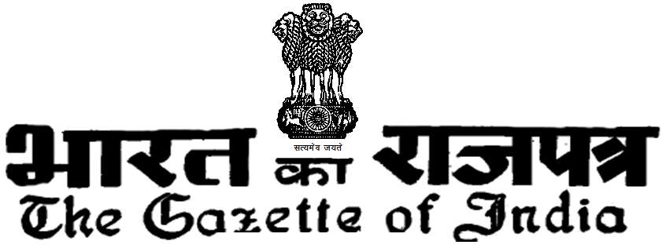

xxxGIDHxxx xxxGIDExxx
रक्षा मंत्रालय
सेना शाखा
सं. 133, दिनांक 11 नवम्बर 2020--राष्ट्रपति निम्नलिखित अधिकारी को सहर्ष पदोन्नति करने की अनुमति प्रदान करते हैंः--
मेजर साबिएल टिर्की टीए-42538 इन्जीनियर (टीए) 20 सितम्बर 2017 मेजर विवेक कुमार टीए-42584 इन्जीनियर (टीए) 22 सितम्बर 2018 मेजर सतीश कुमार टीए-42587 इन्जीनियर (टीए) 08 दिसम्बर 2018
संजीव कुमार उप निदेशक एम॰ एस॰8-सी 1--334 GI/2020
(1771)1772 भारत का राजपत्र, नवम्बर 21, 2020 (कार्तिक 30, 1942) [भाग I—खण्ड 4 सं. 134, दिनांक 11 नवम्बर 2020——राष्ट्रपति निम्नलिखित अधिकारियों को सहर्ष पदोन्नति करने की अनुमति प्रदान करते हैं :——
| आर्मी नं. | वतर्मान टी.जे.नं. | र ैंक | नाम | यूनिट | कब से |
| 10120278पी | 6828पी | हवलदार | जगताप राजू राम | 101 पैदल वाहिनी प्रादेशिक सेना मराठा लाई | 21 अक्टू बर 2017 |
| 10120280एम | 6908एम | हवलदार | स ुरेश जाधव | 101 पैदल वाहिनी प्रादेशिक सेना मराठा लाई | 24 फरवरी 2018 |
| 10120327एम | 6990एम | हवलदार आशीश कु मार | तिवारी | 101 पैदल वाहिनी प्रादेशिक सेना मराठा लाई | 24 नवम्बर 2018 |
| 10120370एन | 6998वाई | हवलदार | रणखम्ब भारत | 101 पैदल वाहिनी प्रादेशिक सेना मराठा लाई | 09 जनवरी 2019 |
| 10467319वाई | 6797ए | हवलदार | यशबीर सिंह | 102 पैदल वाहिनी प्रादेशिक सेना (पंजाब) | 02 अगस्त 2017 |
| 10467320एम | 6798एच | हवलदार | क ृ ष्ण कु मार | 102 पैदल वाहिनी प्रादेशिक सेना (पंजाब) | 02 अगस्त 2017 |
| 10467400वाई | 6818एल | हवलदार | वीर भान | 102 पैदल वाहिनी प्रादेशिक सेना (पंजाब) | 26 सितम्बर 2017 |
| 10467408डब् ल्यू यू | 6933एल | हवलदार | स ुरेन्द्र पाल | 102 पैदल वाहिनी प्रादेशिक सेना (पंजाब) | 02 अप्रैल 2018 |
| 10467429एम | 6934एन | हवलदार | प्रधान | 102 पैदल वाहिनी प्रादेशिक सेना (पंजाब) | 02 अप्रैल 2018 |
| 10467447पी | 6935डब् ल्यू यू | हवलदार ओंकार सिंह | 102 पैदल वाहिनी प्रादेशिक सेना (पंजाब) | 02 अप्रैल 2018 | |
| 10480838वाई | 6917एन | हवलदार | दलजीत सिंह | 103 पैदल वाहिनी प्रादेशिक सेना सिख लाई | 03 मार्च 2018 |
| 10480845पी | 6918डब् ल्यू यू | हवलदार | ग ुरपीत सिंह | 103 पैदल वाहिनी प्रादेशिक सेना सिख लाई | 03 मार्च 2018 |
| 10480854डब् ल्यू यू | 6919वाई | हवलदार | हरबंस सिंह | 103 पैदल वाहिनी प्रादेशिक सेना सिख लाई | 03 मार्च 2018 |
| 10480855वाई | 6920एन | हवलदार | बादशाह प्रसाद | 103 पैदल वाहिनी प्रादेशिक सेना सिख लाई | 03 मार्च 2018 |
| 10480866एल | 6999एफ | हवलदार | अभिशेक राय | 103 पैदल वाहिनी प्रादेशिक सेना सिख लाई | 01 जनवरी 2019 |
| 10480874के | 7000एच | हवलदार | राजेश कु मार | 103 पैदल वाहिनी प्रादेशिक सेना सिख लाई | 01 जनवरी 2019 |
| 10480869वाई | 7001एल | हवलदार | स कवीन्दर सिंह ु | 103 पैदल वाहिनी प्रादेशिक सेना सिख लाई | 01 जनवरी 2019 |
| 10136103डब् ल्यू यू | 7025पी | हवलदार | श ैतान धन पलवत | 105 पैदल वाहिनी प्रादेशिक सेना राज रिफ | 15 फरवरी 2019 |
| 10136107एम | 7026एक्स | हवलदार | राजेन्द्र सिंह यादव | 105 पैदल वाहिनी प्रादेशिक सेना राज रिफ | 15 फरवरी 2019 |
| 10136140के | 7027ए | हवलदार | धर्मवीर सिंह | 105 पैदल वाहिनी प्रादेशिक सेना राज रिफ | 15 फरवरी 2019 |
| 10359779पी | 6660एन | हवलदार | क ृ रीअप्पपा के आ | 106 पैदल वाहिनी प्रादेशिक सेना पैरा | 30 अगस्त 2016 |
| 10359809एफ | 6685ए | हवलदार | माणीकं म के | 106 पैदल वाहिनी प्रादेशिक सेना पैरा | 04 अक्टू बर 2016 |
| 10359828एम | 6774वाई | हवलदार | सी गोविन्दराज | 106 पैदल वाहिनी प्रादेशिक सेना पैरा | 25 मार्च 2017 |
| 10359837एन | 6788वाई | हवलदार | क े सुदर्शन | 106 पैदल वाहिनी प्रादेशिक सेना पैरा | 08 जुलाई 2017 |
| 10359840एन | 6838वाई | हवलदार | ए चिन्नारासु | 106 पैदल वाहिनी प्रादेशिक सेना पैरा | 21 नवम्बर 2017 |
| 10359841डब् ल्यू यू | 6839एफ | हवलदार | क े कोनडाप्पपा एन | 106 पैदल वाहिनी प्रादेशिक सेना पैरा | 21 नवम्बर 2017 |
| 10359844के | 6840डब् ल्यू यू | हवलदार | राजेन्द्र पुजारी | 106 पैदल वाहिनी प्रादेशिक सेना पैरा | 21 नवम्बर 2017 |
| 10359864एक्स | 6841वाई | हवलदार | एम जयाशंकरण | 106 पैदल वाहिनी प्रादेशिक सेना पैरा | 21 नवम्बर 2017 |
| 10490132एक्स | 6932एच | हवलदार | पी कु मार | 106 पैदल वाहिनी प्रादेशिक सेना पैरा | 23 मार्च 2018 |
| 10374841एन | 6843के | हवलदार | ज ुनीत तमंग | 107 पैदल वाहिनी प्रादेशिक सेना 11 जी आर | 01 दिसम्बर 2017 |
| 10260820एक्स | 6844एम | हवलदार | स ुरेन्द्र कु मार राउत | 107 पैदल वाहिनी प्रादेशिक सेना 11 जी आर | 01 दिसम्बर 2017 |
| 10390522एल | 6719एच | हवलदार | श्री देवन्द्र | 109 पैदल वाहिनी प्रादेशिक सेना महार | 02 जनवरी 2017 |
| 10390427वाई | 6815एक्स | हवलदार | मान सिंह दिवाकर 109 पैदल वाहिनी प्रादेशिक सेना महार | 25 सितम्बर 2017 | |
| 10390569डब् ल्यू यू | 6829एक्स | हवलदार | प्रेम नारायण यादव | 109 पैदल वाहिनी प्रादेशिक सेना महार | 01 नवम्बर 2017 |
| 10390600एक्स | 6930एक्स | हवलदार | घनश्याम पटेल | 109 पैदल वाहिनी प्रादेशिक सेना महार | 27 मार्च 2018 |
| 10390609एम | 6931एम | हवलदार | स ंदीप | 109 पैदल वाहिनी प्रादेशिक सेना महार | 20 मार्च 2018 |
| 10150679वाई | 6819एन | हवलदार | पाटिल कृ ष्णकान्त | 109 पैदल वाहिनी प्रादेशिक सेना मराठा लाई | 25 सितम्बर 2017 |
| 10150902एक्स | 6923एफ | हवलदार | पाटिल शिवाजी आन्नदराव | 109 पैदल वाहिनी प्रादेशिक सेना मराठा लाई | 28 फरवरी 2018 |
| 10150704के | 6924के | हवलदार | रूपान्कर प्रलाध भगवान | 109 पैदल वाहिनी प्रादेशिक सेना मराठा लाई | 28 फरवरी 2018 |
| 10150712एल | 6925एम | हवलदार | पाटिल राजराम गोविन्दा | 109 पैदल वाहिनी प्रादेशिक सेना मराठा लाई | 28 फरवरी 2018 |
| 10150774एल | 6926पी | हवलदार | वाघे संजय ईश्वर | 109 पैदल वाहिनी प्रादेशिक सेना मराठा लाई | 28 फरवरी 2018 |
| 10150775एन | 6944एक्स | हवलदार | रविन्द्र सिंह | 109 पैदल वाहिनी प्रादेशिक सेना मराठा लाई | 01 मई 2018 |
| 10150791एल | 7021वाई | हवलदार | वालागड्डे उमेश श कर ं | 109 पैदल वाहिनी प्रादेशिक सेना मराठा लाई | 07 फरवरी 2019 |
| 10150834पी | 7022एफ | हवलदार | घ ेवारी शिवाजी रामाचन्द्र | 109 पैदल वाहिनी प्रादेशिक सेना मराठा लाई | 07 फरवरी 2019 |
| 10166994वाई | 6915एच | हवलदार | पी मुर्गन | 110 पैदल वाहिनी प्रादेशिक सेना मद्रास | 15 मार्च 2018 |
| 10166998पी | 6916एम | हवलदार | प्रभाकर आर | 110 पैदल वाहिनी प्रादेशिक सेना मद्रास | 15 मार्च 2018 |
| 10167003एम | 6951एन | हवलदार | शिजू आ वी | 110 पैदल वाहिनी प्रादेशिक सेना मद्रास | 04 जून 2018 |
| 10167059वाई | 6995एल | हवलदार | म ुथूपन्डू एन | 110 पैदल वाहिनी प्रादेशिक सेना मद्रास | 22 नवम्बर 2018 |
| 10182667वाई | 6943वाई | हवलदार | र्न सिंह अजु | 111 पैदल वाहिनी प्रादेशिक सेना कु माऊ | 25 अप्रैल 2018 |
| 10182694एफ | 6983डब् ल्यू यू | हवलदार | स ुभाष चन्द्रा | 111 पैदल वाहिनी प्रादेशिक सेना कु माऊ | 26 नवम्बर 2018 |
| 10182704ए | 7028एच | हवलदार | कमलेश कु मार | 111 पैदल वाहिनी प्रादेशिक सेना कु माऊ | 16 फरवरी 2019 |
| 10182707एन | 7029एल | हवलदार | जान्मेजय सिंह | 111 पैदल वाहिनी प्रादेशिक सेना कु माऊ | 16 फरवरी 2019 |
| 10198833के | 6744एफ | हवलदार | सरबजीत सिंह | 112 पैदल वाहिनी प्रादेशिक सेना (डोगरा) | 01 फरवरी 2017 |
| 10198883पी | 6802ए | हवलदार | रणजीत सिंह | 112 पैदल वाहिनी प्रादेशिक सेना (डोगरा) | 02 अगस्त 2017 |
| 10198976के | 6887एफ | हवलदार | निरवाल सिंह | 112 पैदल वाहिनी प्रादेशिक सेना (डोगरा) | 17 जनवरी 2018 |
| 10198997ए | 6909पी | हवलदार | अमरदीप सिंह | 112 पैदल वाहिनी प्रादेशिक सेना (डोगरा) | 19 फरवरी 2018 |
| 10198968एल | 6969के | हवलदार | स ुनील कु मार | 112 पैदल वाहिनी प्रादेशिक सेना (डोगरा) | 01 अगस्त 2018 |
| 10198977एम | 7005एफ | हवलदार | नरेश कु मार | 112 पैदल वाहिनी प्रादेशिक सेना (डोगरा) | 05 जनवरी 2019 |
| 10406311पी | 6977एच | हवलदार | अरूण कु मार सिंह | 114 पैदल वाहिनी प्रादेशिक सेना जाट | 05 सितम्बर 2018 |
| 10421305वाई | 6810वाई | हवलदार | जगदीश निटवानी | 115 पैदल वाहिनी प्रादेशिक सेना महार | 01 सितम्बर 2017 |
| 10421335डब् ल्यू यू | 6888के | हवलदार | ईरप्पपा गोदागिरी | 115 पैदल वाहिनी प्रादेशिक सेना महार | 16 जनवरी 2018 |
| 10421354एफ | 6946एच | हवलदार | म ुनीरसाब ईंगलेश्वर | 115 पैदल वाहिनी प्रादेशिक सेना महार | 10 दिसम्बर 2018 |
| 10421367वाई | 7013ए | हवलदार | महादेव कडाकोल | 115 पैदल वाहिनी प्रादेशिक सेना महार | 26 जनवरी 2019 |
| 10437712एल | 6899डब् ल्यू यू | हवलदार | मराठे वालमिक सन्तोष | 116 पैदल वाहिनी प्रादेशिक सेना पारा | 16 जनवरी 2019 |
| 10437731डब् ल्यू यू | 6900ए | हवलदार | र ेवगाडे रामदास काचारू | 116 पैदल वाहिनी प्रादेशिक सेना पारा | 16 जनवरी 2019 |
| 10437762डब् ल्यू यू | 6947एल | हवलदार | शिन्दे भिवशन | 116 पैदल वाहिनी प्रादेशिक सेना पारा | 11 मई 2018 |
| 10437779के | 6948एन | हवलदार | वाघामारे रविन्द्र स ुखदेव | 116 पैदल वाहिनी प्रादेशिक सेना पारा | 11 मई 2018 |
| 10437802एम | 6949डब् ल्यू यू | हवलदार | निशल शिवाजी उत्तम | 116 पैदल वाहिनी प्रादेशिक सेना पारा | 11 मई 2018 |
| 10437897एक्स | 6950एल | हवलदार | द ेश राज | 116 पैदल वाहिनी प्रादेशिक सेना पारा | 11 मई 2018 |
| 10437900एम | 6973एम | हवलदार | पिंगत मोतीराम छगन | 116 पैदल वाहिनी प्रादेशिक सेना पारा | 04 सितम्बर 2018 |
| 10453008वाई | 6896एच | हवलदार | एस गणेशन | 117 पैदल वाहिनी प्रादेशिक सेना गार्डस | 26 जनवरी 2018 |
| 10453075के | 6982एन | हवलदार | जॉन बोसको एस | 117 पैदल वाहिनी प्रादेशिक सेना गार्डस | 06 नवम्बर 2018 |
| 10228352पी | 6906एफ | हवलदार | गजानन बवाने | 118 पैदल वाहिनी प्रादेशिक सेना ग्रनेडियर्स | 03 फरवरी 2018 |
| 10228366पी | 6907के | हवलदार | शीशराम यादव | 118 पैदल वाहिनी प्रादेशिक सेना ग्रनेडियर्स | 03 फरवरी 2018 |
| 10260745वाई | 6740एल | हवलदार | प्रशान्ता कु मार दास | 120 पैदल वाहिनी प्रादेशिक सेना बिहार | 08 जनवरी 2017 |
| 10260773एल | 6812के | हवलदार | सपनेशवर राउत | 120 पैदल वाहिनी प्रादेशिक सेना बिहार | 01 सितम्बर 2017 |
| 10260837एल | 6901एच | हवलदार | भारत कु मार सिंह | 120 पैदल वाहिनी प्रादेशिक सेना बिहार | 24 जनवरी 2018 |
| 10260890डब् ल्यू यू | 7007एम | हवलदार | निहारा रंजन राउत | 120 पैदल वाहिनी प्रादेशिक सेना बिहार | 08 जनवरी 2019 |
| 10260872एन | 7008पी | हवलदार | कार्तिक चन्द्र जैना | 120 पैदल वाहिनी प्रादेशिक सेना बिहार | 08 जनवरी 2019 |
| 10260918एल | 7009एक्स | हवलदार | स ुनील कु मार प्रधान | 120 पैदल वाहिनी प्रादेशिक सेना बिहार | 08 जनवरी 2019 |
| 10291651एच | 7014एच | हवलदार | रविन्द्रन के वी | 122 पैदल वाहिनी प्रादेशिक सेना मद्रास | 01 जनवरी 2019 |
| 10303620एक्स | 6876पी | हवलदार | कल्यूयाण सिंह | 123 पैदल वाहिनी प्रादेशिक सेना ग्रनेडियर्स | 22 दिसम्बर 2017 |
| 10303623एल | 6910के | हवलदार | लोके न्द्र सिंह सोलंकी | 123 पैदल वाहिनी प्रादेशिक सेना ग्रनेडियर्स | 19 फरवरी 2018 |
| 10303626वाई | 6911एम | हवलदार | राम निवास | 123 पैदल वाहिनी प्रादेशिक सेना ग्रनेडियर्स | 19 फरवरी 2018 |
| 10303641एन | 6912पी | हवलदार | प्रेम राज चौधरी | 123 पैदल वाहिनी प्रादेशिक सेना ग्रनेडियर्स | 19 फरवरी 2018 |
| 10303646एम | 6913एक्स | हवलदार | स ुरजीत सिंह | 123 पैदल वाहिनी प्रादेशिक सेना ग्रनेडियर्स | 19 फरवरी 2018 |
| 10303668एल | 6914एम | हवलदार | स ुरेन्द्र सिंह | 123 पैदल वाहिनी प्रादेशिक सेना ग्रनेडियर्स | 19 फरवरी 2018 |
| 10303672एन | 6993ए | हवलदार | अजमल सिंह | 123 पैदल वाहिनी प्रादेशिक सेना ग्रनेडियर्स | 20 नवम्बर 2018 |
| 10303701एक्स | 6994एच | हवलदार | मोहन सिंह | 123 पैदल वाहिनी प्रादेशिक सेना ग्रनेडियर्स | 20 नवम्बर 2018 |
| 10303886एन | 7030ए | हवलदार | सन्दीप सिंह | 123 पैदल वाहिनी प्रादेशिक सेना ग्रनेडियर्स | 16 फरवरी 2018 |
| 10317521एक्स | 6985एफ | हवलदार | जशबीर सिंह | 124 पैदल वाहिनी प्रादेशिक सेना सिख | 04 दिसम्बर 2018 |
| 10316052डब् ल्यू यू | 6996एन | हवलदार | मनोज कु मार | 124 पैदल वाहिनी प्रादेशिक सेना सिख | 12 दिसम्बर 2018 |
| 10329492एच | 6889एम | हवलदार | पीडा दासरीं प ुल्यूलाह | 125 पैदल वाहिनी प्रादेशिक सेना गार्डस | 12 जनवरी 2018 |
| 10329512एल | 6890एफ | हवलदार | जी पान्डू | 125 पैदल वाहिनी प्रादेशिक सेना गार्डस | 01 फरवरी 2018 |
| 10329666एक्स | 7002एन | हवलदार | स ुरेश बाबू वाई | 125 पैदल वाहिनी प्रादेशिक सेना गार्डस | 03 जनवरी 2019 |
| 10362436के | 6272डब् ल्यू यू | हवलदार | मोहिन्द्र सिंह | 126 पैदल वाहिनी प्रादेशिक सेना जैक रिफ | 20 नवम्बर 2013 |
| 10315135पी | 6280पी | हवलदार | ज्योति शर्मा | 126 पैदल वाहिनी प्रादेशिक सेना जैक रिफ | 01 जनवरी 2014 |
| 10362466एफ | 6357एम | हवलदार | रविन्द्र सिंह | 126 पैदल वाहिनी प्रादेशिक सेना जैक रिफ | 25 सितम्बर 2014 |
| 10362517के | 6412एक्स | हवलदार | मस्त राम | 126 पैदल वाहिनी प्रादेशिक सेना जैक रिफ | 13 जनवरी 2015 |
| 10362576डब् ल्यू यू | 6735ए | हवलदार | रोशन लाला | 126 पैदल वाहिनी प्रादेशिक सेना जैक रिफ | 04 जनवरी 2017 |
| 10362586ए | 6736एच | हवलदार | सोम राज | 126 पैदल वाहिनी प्रादेशिक सेना जैक रिफ | 04 जनवरी 2017 |
| 10362588एल | 6737एल | हवलदार | सोम राज | 126 पैदल वाहिनी प्रादेशिक सेना जैक रिफ | 04 जनवरी 2014 |
| 10362660डब् ल्यू यू | 6800पी | हवलदार | क ु लदीप सिंह | 126 पैदल वाहिनी प्रादेशिक सेना जैक रिफ | 01 अगस्त 2017 |
| 10362661वाई | 6801एक्स | हवलदार ओंमप्रकाश | 126 पैदल वाहिनी प्रादेशिक सेना जैक रिफ | 01 अगस्त 2017 | |
| 10362730डब् ल्यू यू | 6845पी | हवलदार | रविन्द्र सिंह | 126 पैदल वाहिनी प्रादेशिक सेना जैक रिफ | 22 नवम्बर 2017 |
| 10362777पी | 6878ए | हवलदार | र्न सिंह अजु | 126 पैदल वाहिनी प्रादेशिक सेना जैक रिफ | 03 जनवरी 2018 |
| 10362779ए | 6879एच | हवलदार | गोविन्द राम | 126 पैदल वाहिनी प्रादेशिक सेना जैक रिफ | 03 जनवरी 2018 |
| 10362780पी | 6880एक्स | हवलदार | राम सिंह | 126 पैदल वाहिनी प्रादेशिक सेना जैक रिफ | 03 जनवरी 2018 |
| 10362785डब् ल्यू यू | 6945ए | हवलदार | रविन्द्र कु मार | 126 पैदल वाहिनी प्रादेशिक सेना जैक रिफ | 30 अप्रैल 2018 |
| 10362801ए | 6966डब् ल्यू यू | हवलदार | मनोहर लाल | 126 पैदल वाहिनी प्रादेशिक सेना जैक रिफ | 01 अगस्त 2018 |
| 10362805डब् ल्यू यू | 6975डब् ल्यू यू | हवलदार | बलबीर चन्द | 126 पैदल वाहिनी प्रादेशिक सेना जैक रिफ | 01 सितम्बर 2018 |
| 10362782ए | 7003डब् ल्यू यू | हवलदार | बलविन्द्र कु मार | 126 पैदल वाहिनी प्रादेशिक सेना जैक रिफ | 04 जनवरी 2019 |
| 10135907वाई | 6738एन | हवलदार | मान सिंह | 150 पैदल वाहिनी प्रादेशिक सेना पंजाब | 13 जनवरी 2017 |
| 10135920एच | 6766ए | हवलदार | अशोक कु मार | 150 पैदल वाहिनी प्रादेशिक सेना पंजाब | 06 मार्च 2017 |
| 10136047डब् ल्यू यू | 6813एम | हवलदार | मनोज कु मार | 150 पैदल वाहिनी प्रादेशिक सेना पंजाब | 18 सितम्बर 2017 |
| 10467463एम | 6814पी | हवलदार | भ ूरे लाल | 150 पैदल वाहिनी प्रादेशिक सेना पंजाब | 14 सितम्बर 2017 |
| 10467478पी | 6893पी | हवलदार | मोहम्मद अनवर | 150 पैदल वाहिनी प्रादेशिक सेना पंजाब | 26 जनवरी 2018 |
| 10467494एम | 6959ए | हवलदार | अमर सिंह माशरंग | 150 पैदल वाहिनी प्रादेशिक सेना पंजाब | 29 जून 2018 |
| 10495235ए | 6970वाई | हवलदार | राज पाल | 150 पैदल वाहिनी प्रादेशिक सेना पंजाब | 01 अगस्त 2018 |
| 10495349 | 6971एफ | हवलदार | सतेन्द्र सिंह पँवार | 150 पैदल वाहिनी प्रादेशिक सेना पंजाब | 01 अगस्त 2018 |
| 10495355वाई | 6974पी | हवलदार | भारत सिंह | 150 पैदल वाहिनी प्रादेशिक सेना पंजाब | 24 अगस्त 2018 |
| 10274967वाई | 6936वाई | हवलदार | सन्तोष कु मार सहानी | 151 पैदल वाहिनी प्रादेशिक सेना जाट | 19 मई 2018 |
| 10505124वाई | 6937एफ | हवलदार | स ं जय कु मार | 151 पैदल वाहिनी प्रादेशिक सेना जाट | 24 मई 2018 |
| 10390572डब् ल्यू यू | 6958एक्स | हवलदार | स ुनील कु मार पाठक | 151 पैदल वाहिनी प्रादेशिक सेना जाट | 31 मई 2018 |
| 10505136एन | 6972के | हवलदार | मनोज कु मार पांडे 151 पैदल वाहिनी प्रादेशिक सेना जाट | 13 अगस्त 2018 | |
| 10480860के | 6739डब् ल्यू यू | हवलदार | ईकबाल सिंह | 152 पैदल वाहिनी प्रादेशिक सेना सिख | 01 फरवरी 2017 |
| 10315729के | 6953वाई | हवलदार | नसरूदीन अहमद | 152 पैदल वाहिनी प्रादेशिक सेना सिख | 09 जुलाई 2018 |
| 10515214एन | 6965एन | हवलदार | स ुशील कु मार | 152 पैदल वाहिनी प्रादेशिक सेना सिख | 14 जुलाई 2018 |
| 10315734पी | 7023के | हवलदार | जय भगवान | 152 पैदल वाहिनी प्रादेशिक सेना सिख | 06 फरवरी 2019 |
| 10525174एल | 6799एल | हवलदार | शहजाद आलम | 153 पैदल वाहिनी प्रादेशिक सेना डोगरा | 01 सितम्बर 2017 |
| 10525183एम | 6881ए | हवलदार | जोगिन्दर सिंह | 153 पैदल वाहिनी प्रादेशिक सेना डोगरा | 16 जनवरी 2018 |
| 10525186ए | 6882एच | हवलदार | हरदीप सिंह | 153 पैदल वाहिनी प्रादेशिक सेना डोगरा | 16 जनवरी 2018 |
| 10525199एक्स | 6884एन | हवलदार | राजीव कु मार शर्मा | 153 पैदल वाहिनी प्रादेशिक सेना डोगरा | 16 जनवरी 2018 |
| 10525228एफ | 6885डब् ल्यू यू | हवलदार | हामेन्द्र कु मार | 153 पैदल वाहिनी प्रादेशिक सेना डोगरा | 16 जनवरी 2018 |
| 10525177वाई | 6940एफ | हवलदार | अनुज कु मार | 153 पैदल वाहिनी प्रादेशिक सेना डोगरा | 01 मई 2018 |
| 10525195एफ | 6941के | हवलदार | विकास धिमन | 153 पैदल वाहिनी प्रादेशिक सेना डोगरा | 01 मई 2018 |
| 10525247एम | 6963एच | हवलदार | महेन्द्र कु मार | 153 पैदल वाहिनी प्रादेशिक सेना डोगरा | 14 जुलाई 2018 |
| 12909068एच | 6984वाई | हवलदार | मनीष कु मार सिरोही | 153 पैदल वाहिनी प्रादेशिक सेना डोगरा | 17 नवम्बर 2018 |
| 10525248पी | 7006के | हवलदार | रघुविन्द्र पाण्डे | 153 पैदल वाहिनी प्रादेशिक सेना डोगरा | 08 जनवरी 2019 |
| 10260778के | 6821एल | हवलदार | अरूण कु मार सिंह | 154 पैदल वाहिनी प्रादेशिक सेना बिहार | 27 सितम्बर 2017 |
| 10260779एन | 6822एन | हवलदार | त्रिलोचन जैना | 154 पैदल वाहिनी प्रादेशिक सेना बिहार | 27 सितम्बर 2017 |
| 10260823एल | 6897एल | हवलदार | चक्रधारा साहू | 154 पैदल वाहिनी प्रादेशिक सेना बिहार | 19 जनवरी 2018 |
| 10260824डब् ल्यू यू | 6898एन | हवलदार | मनोज कु मार महान्ता | 154 पैदल वाहिनी प्रादेशिक सेना बिहार | 19 जनवरी 2018 |
| 10260876के | 6939एन | हवलदार | अभिमन्यु प्रधान | 154 पैदल वाहिनी प्रादेशिक सेना बिहार | 01 मई 2018 |
| 10535131के | 6964एल | हवलदार | अजय उरण | 154 पैदल वाहिनी प्रादेशिक सेना बिहार | 12 जुलाई 2018 |
| 10362760पी | 6846एक्स | हवलदार | करतार चन्द | 155 पैदल वाहिनी प्रादेशिक सेना जैक रिफ | 01 दिसम्बर 2017 |
| 10362790वाई | 6871डब् ल्यू यू | हवलदार | र्न सिंह अजु | 155 पैदल वाहिनी प्रादेशिक सेना जैक रिफ | 01 अगस्त 2018 |
| 10362902एन | 6872वाई | हवलदार | चक्रवर्ती शर्मा | 155 पैदल वाहिनी प्रादेशिक सेना जैक रिफ | 01 जनवरी 2018 |
| 10362907डब् ल्यू यू | 6967वाई | हवलदार | वजीर सिंह | 155 पैदल वाहिनी प्रादेशिक सेना जैक रिफ | 01 अगस्त 2018 |
| 10362910एम | 6968एफ | हवलदार | जीवन ज्योति | 155 पैदल वाहिनी प्रादेशिक सेना जैक रिफ | 01 अगस्त 2018 |
| 10392922एफ | 7010एम | हवलदार | सतीश सिंह | 155 पैदल वाहिनी प्रादेशिक सेना जैक रिफ | 05 जनवरी 2019 |
| 10362936एफ | 7011पी | हवलदार | किशोर चन्द | 155 पैदल वाहिनी प्रादेशिक सेना जैक रिफ | 05 जनवरी 2019 |
| 10545123वाई | 7012एक्स | हवलदार | शयाम सिंह | 155 पैदल वाहिनी प्रादेशिक सेना जैक रिफ | 05 जनवरी 2019 |
| 12914625ए | 6981वाई | हवलदार | अब्दुल मनन | 156 पैदल वाहिनी प्रादेशिक सेना (एच एण्ड एच) पंजाब | 29 अक्टू बर 2018 |
| 10545355एक्स | 6820एच | हवलदार | वरूण कु मार | 157 पैदल वाहिनी प्रादेशिक सेना (एच एण्ड एच) सिख लाई | 01 सितम्बर 2017 |
| 10291412एन | 6511ए | हवलदार | कार्तिके यन | 158 पैदल वाहिनी प्रादेशिक सेना (एच एण्ड एच) सिख लाई | 01 जून 2015 |
| 10480230के | 6512एच | हवलदार | क ु लवन्त सिंह | 158 पैदल वाहिनी प्रादेशिक सेना (एच एण्ड एच) सिख लाई | 01 जून 2015 |
| 10315080डब् ल्यू यू | 6558एल | हवलदार | स ुरेन्द्र कु मार | 158 पैदल वाहिनी प्रादेशिक सेना (एच एण्ड एच) सिख लाई | 10 अक्टू बर 2015 |
| 10315224एन | 6559एन | हवलदार | राके श कु मार सिंह | 158 पैदल वाहिनी प्रादेशिक सेना (एच एण्ड एच) सिख लाई | 10 अक्टू बर 2015 |
| 10260477ए | 6650के | हवलदार | स ुशान्ता कु मार साहु | 158 पैदल वाहिनी प्रादेशिक सेना (एच एण्ड एच) सिख लाई | 01 मई 2016 |
| 10291414वाई | 6714के | हवलदार ओंमान्कु टन | 158 पैदल वाहिनी प्रादेशिक सेना (एच एण्ड एच) सिख लाई | 06 अक्टू बर 2016 | |
| 12892546एच | 6632एफ | हवलदार | जशवीर सिंह सिद्धू | 159 पैदल वाहिनी प्रादेशिक सेना (एच एण्ड एच) सिख लाई | 27 जून 2016 |
| 10136372एच | 6962ए | हवलदार | क ँ वर गुरूदर्शन सिंह | 159 पैदल वाहिनी प्रादेशिक सेना (एच एण्ड एच) सिख लाई | 01 अगस्त 2018 |
| 12944105के | 6991पी | हवलदार | स ुशील कु मार | 159 पैदल वाहिनी प्रादेशिक सेना (एच एण्ड एच) सिख लाई | 22 नवम्बर 2018 |
| 12944108एक्स | 6992एक्स | हवलदार | दिनेश कु मार | 159 पैदल वाहिनी प्रादेशिक सेना (एच एण्ड एच) सिख लाई | 26 नवम्बर 2018 |
| 12944175एच | 7018वाई | हवलदार | हरविन्द्र सिंह | 159 पैदल वाहिनी प्रादेशिक सेना (एच एण्ड एच) सिख लाई | 25 जनवरी 2019 |
| 10303141डब् ल्यू यू | 6451डब् ल्यू यू | हवलदार | क े शर लाल रेगर | 160 पैदल वाहिनी प्रादेशिक सेना (एच एण्ड एच) जैक रिफ | 25 अप्रैल 2015 |
| 10390183डब् ल्यू यू | 6520एफ | हवलदार | श्री मुकन्दी लाल यादव | 160 पैदल वाहिनी प्रादेशिक सेना (एच एण्ड एच) जैक रिफ | 30 सितम्बर 2015 |
| 12974111एम | 6777एम | हवलदार | फिरोज अहमद भट | 162 पैदल वाहिनी प्रादेशिक सेना (एच एण्ड एच) जैक लाई | 11 अप्रैल 2017 |
| 12974141के | 6831पी | हवलदार | फ ै याज अहमद लोने | 162 पैदल वाहिनी प्रादेशिक सेना (एच एण्ड एच) जैकलाई | 27 अक्टू बर 2017 |
| 129741418एन | 6891वाई | हवलदार | तारीक अहमद श ेख | 162 पैदल वाहिनी प्रादेशिक सेना (एच एण्ड एच) जैक लाई | 12 जनवरी 2018 |
| 12974169के | 6892एम | हवलदार | मो. अशरफ भट्ट | 162 पैदल वाहिनी प्रादेशिक सेना (एच एण्ड एच) जैक लाई | 12 जनवरी 2018 |
| 12974182N | 7004वाई | हवलदार | एबी क्यूम ईट्टू | 162 पैदल वाहिनी प्रादेशिक सेना (एच एण्ड एच) जैक लाई | 05 जनवरी 2019 |
| 10545144पी | 6980एच | हवलदार | दिनेश कु मार | 163 पैदल वाहिनी प्रादेशिक सेना (एच एण्ड एच) सिख लाई | 17 अक्टू बर 2018 |
| 10545132ए | 6979एन | हवलदार | जय प्रकाश | 163 पैदल वाहिनी प्रादेशिक सेना (एच एण्ड एच) सिख लाई | 17 अक्टू बर 2018 |
| 10535343पी | 6768एल | हवलदार | कोशिक सेन | 164 पैदल वाहिनी प्रादेशिक सेना (एच एण्ड एच) नागा | 04 मार्च 2017 |
| 10260417एल | 6785पी | हवलदार | नन्द किशोर सिंह | 165 पैदल वाहिनी प्रादेशिक सेना (एच एण्ड एच) आसाम | 10 अप्रैल 2017 |
| 10437620वाई | 6873एफ | हवलदार | द ेओकर रविन्द्र गणपत | 173 इंजिनियर रेजीमेन्ट प्रादेशिक सेना | 26 दिसम्बर 2017 |
| 10467290ए | 6874के | हवलदार | स ुरेन्द्र सिंह | 173 इंजिनियर रेजीमेन्ट प्रादेशिक सेना | 22 दिसम्बर 2017 |
| 10467380एफ | 6875एम | हवलदार | बलबीर सिंह | 173 इंजिनियर रेजीमेन्ट प्रादेशिक सेना | 22 दिसम्बर 2017 |
| 12934132ए | 6997डब् ल्यू यू | हवलदार | दिपक भलगोतरा | 173 इंजिनियर रेजीमेन्ट प्रादेशिक सेना | 06 दिसम्बर 2017 |
| 12934159एक्स | 6986के | हवलदार | स ूरज प्रकाश | 174 इंजिनियर रेजीमेन्ट प्रादेशिक सेना | 24 नवम्बर 2018 |
| 12934233एन | 6987एम | हवलदार | राके श कु मार | 174 इंजिनियर रेजीमेन्ट प्रादेशिक सेना | 24 नवम्बर 2018 |
| 12934234डब् ल्यू यू | 6988पी | हवलदार | मोहम्मद इमरान | 174 इंजिनियर रेजीमेन्ट प्रादेशिक सेना | 24 नवम्बर 2018 |
| 12934283डब् ल्यू यू | 6989एक्स | हवलदार | गोपाल दास | 174 इंजिनियर रेजीमेन्ट प्रादेशिक सेना | 03 दिसम्बर 2018 |
| 12819115एन | 6759के | हवलदार | राके श सिंह | 801 इंजिनियर रेजीमेन्ट प्रादेशिक आर एण्ड पी | 04 अक्टू बर 2016 |
| 12819188ए | 6760वाई | हवलदार | सतगुर सिंह | 801 इंजिनियर रेजीमेन्ट प्रादेशिक आर एण्ड पी | 04 अक्टू बर 2016 |
| 12819205पी | 6598एम | हवलदार | नरेश पाल | 801 इंजिनियर रेजीमेन्ट प्रादेशिक आर एण्ड पी | 13 अक्टू बर 2016 |
| 12819195डब् ल्यू यू | 6473पी | हवलदार | प्राशान्ना बी द ेओधर | 801 इंजिनियर रेजीमेन्ट प्रादेशिक आर एण्ड पी | 16 फरवरी 2017 |
| 12819174ए | 6784एम | हवलदार | एके चौहान | 801 इंजिनियर रेजीमेन्ट प्रादेशिक आर एण्ड पी | 04 फरवरी 2017 |
| 12819138पी | 6795पी | हवलदार | मनमोहन लाल शर्मा | 801 इंजिनियर रेजीमेन्ट प्रादेशिक आर एण्ड पी | 14 मार्च 2017 |
| 12819141पी | 6472एम | हवलदार | राजेन्द्र कु मार सेन | 801 इंजिनियर रेजीमेन्ट प्रादेशिक आर एण्ड पी | 05 फरवरी 2016 |
| 12390982वाई | 6847ए | हवलदार | एमसीवी राजू | 1105 रेलवे इंजिनियर रेजीमेन्ट प्रादेशिक स ेना | 17 अगस्त 2018 |
| 12383510ए | 6848एच | हवलदार | स ैयद अली | 1105 रेलवे इंजिनियर रेजीमेन्ट प्रादेशिक स ेना | 08 जनवरी 2018 |
| 12383526एल | 6849एल | हवलदार | क े भास्कर राव | 1105 रेलवे इंजिनियर रेजीमेन्ट प्रादेशिक स ेना | 08 जनवरी 2018 |
| 12383521एम | 6850ए | हवलदार | ए सुरेश बाबू | 1105 रेलवे इंजिनियर रेजीमेन्ट प्रादेशिक स ेना | 11 जनवरी 2018 |
| 12385002एच | 6851एच | हवलदार | बी सोलोमन राजू | 1105 रेलवे इंजिनियर रेजीमेन्ट प्रादेशिक स ेना | 08 जनवरी 2018 |
| 12383531डब् ल्यू यू | 6853एन | हवलदार | ए सतीश कु मार | 1105 रेलवे इंजिनियर रेजीमेन्ट प्रादेशिक स ेना | 08 जनवरी 2018 |
| 12383548के | 6854डब् ल्यू यू | हवलदार | डी टेगौर नाथ | 1105 रेलवे इंजिनियर रेजीमेन्ट प्रादेशिक स ेना | 02 मार्च 2018 |
| 12385017एल | 6855वाई | हवलदार | एम डोरा बाबू | 1105 रेलवे इंजिनियर रेजीमेन्ट प्रादेशिक स ेना | 07 जनवरी 2019 |
| 12391080एल | 6857के | हवलदार | क े वी के वी प्रसाद | 1105 रेलवे इंजिनियर रेजीमेन्ट प्रादेशिक स ेना | 17 अगस्त 2018 |
| 12370288एल | 6856एफ | हवलदार | बी कोन्दा नायक | 1105 रेलवे इंजिनियर रेजीमेन्ट प्रादेशिक स ेना | 19 अक्टू बर 2018 |
| 12383569ए | 6860के | हवलदार | डी रमेश बाबू | 1105 रेलवे इंजिनियर रेजीमेन्ट प्रादेशिक स ेना | 08 जनवरी 2018 |
| 12385055एफ | 6863एक्स | हवलदार | थोमस अब्राहम | 1105 रेलवे इंजिनियर रेजीमेन्ट प्रादेशिक स ेना | 05 जनवरी 2019 |
| 12391114वाई | 6864ए | हवलदार | स ूरज कु मार कु र्रे | 1105 रेलवे इंजिनियर रेजीमेन्ट प्रादेशिक स ेना | 19 अक्टू बर 2018 |
| 12391118पी | 6865एच | हवलदार | बी वेंकटेशवरूल्यूलु | 1105 रेलवे इंजिनियर रेजीमेन्ट प्रादेशिक स ेना | 17 अगस्त 2018 |
| 12385069एफ | 6866एल | हवलदार | जी सतीश कु मार | 1105 रेलवे इंजिनियर रेजीमेन्ट प्रादेशिक स ेना | 05 जनवरी 2019 |
| 12383652एक्स | 6868डब् ल्यू यू | हवलदार आर पच्चापन | 1105 रेलवे इंजिनियर रेजीमेन्ट प्रादेशिक स ेना | 08 जनवरी 2018 | |
| 12383584पी | 6960पी | हवलदार | ऐएल नवालगुण्ड | 1105 रेलवे इंजिनियर रेजीमेन्ट प्रादेशिक स ेना | 07 जून 2018 |
| 12391021के | 6961एक्स | हवलदार | चन्द्रकान्त एम एच | 1105 रेलवे इंजिनियर रेजीमेन्ट प्रादेशिक स ेना | 07 जनवरी 2019 |
| 12104073एच | 6954एच | हवलदार | विजय कु मार म ंडल | 969 रेलवे इंजिनियर रेजीमेन्ट प्रादेशिक सेना | 16 जनवरी 2019 |
| 12059718एल | 6955के | हवलदार | श्रीकान्त प्रसाद | 969 रेलवे इंजिनियर रेजीमेन्ट प्रादेशिक सेना | 17 सितम्बर 2018 |
| 12059741वाई | 6956एम | हवलदार | उमेश प्रसाद गोंड | 969 रेलवे इंजिनियर रेजीमेन्ट प्रादेशिक सेना | 16 जुलाई 2018 |
| 12077224ए | 6957पी | हवलदार | हरी किशोर मंडल | 969 रेलवे इंजिनियर रेजीमेन्ट प्रादेशिक सेना | 16 जुलाई 2018 |
| 12281413ए | 6808एफ | हवलदार | क े शव प्रसाद प्रजापती | 1031 रेलवे इंजिनियर रेजीमेन्ट प्रादेशिक स ेना | 24 दिसम्बर 2018 |
| वतर्मान टी.जे.नं. | र ैंक | नाम | यूनिट | कब से |
| 6595वाई | नायब सूबेदार | नायक किरण | 101 पैदल वाहिनी प्रादेशिक सेना मराठा लाई | 07 अक्टू बर 2017 |
| 6448डब् ल्यू यू | नायब सूबेदार | उथेकर मुके श | 101 पैदल वाहिनी प्रादेशिक सेना मराठा लाई | 26 दिसम्बर 2017 |
| 6449वाई | नायब सूबेदार | घडगे वाजीनाथ | 101 पैदल वाहिनी प्रादेशिक सेना मराठा लाई | 07 अप्रैल 2016 |
| 6465डब् ल्यू यू | नायब सूबेदार | भौरे राजेन्द्र | 101 पैदल वाहिनी प्रादेशिक सेना मराठा लाई | 30 मॉर्च 2016 |
| 6327पी | नायब सूबेदार | लोक राज | 102 पैदल वाहिनी प्रादेशिक सेना (पंजाब) | 29 जुलाई 2017 |
| 6328एक्स | नायब सूबेदार | हरजीन्द्र सिंह | 102 पैदल वाहिनी प्रादेशिक सेना (पंजाब) | 18 अक्टू बर 2017 |
| 6421वाई | नायब सूबेदार | विक्रम सिंह | 102 पैदल वाहिनी प्रादेशिक सेना (पंजाब) | 09 मई 2016 |
| 6329ए | नायब सूबेदार | सुधीर सिंह | 102 पैदल वाहिनी प्रादेशिक सेना (पंजाब) | 01 अप्रैल 2018 |
| 6415एल | नायब सूबेदार | तरशेम सिंह | 102 पैदल वाहिनी प्रादेशिक सेना (पंजाब) | 01 अप्रैल 2018 |
| 4925एऩ | नायब सूबेदार | जशपाल सिंह | 103 पैदल वाहिनी प्रादेशिक सेना (सिख) लाई | 05 नवम्बर 2018 |
| 5517पी | नायब सूबेदार | रविन्द्र सिंह | 103 पैदल वाहिनी प्रादेशिक सेना (सिख) लाई | 24 फरवरी 2011 |
| 5519ए | नायब सूबेदार | अवतार सिंह | 103 पैदल वाहिनी प्रादेशिक सेना (सिख) लाई | 01 दिसम्बर 2010 |
| 5520पी | नायब सूबेदार | राम गोपाल शर्मा | 103 पैदल वाहिनी प्रादेशिक सेना (सिख) लाई | 01 दिसम्बर 2010 |
| 5681एक्स | नायब सूबेदार | क ु लवन्त सिंह | 103 पैदल वाहिनी प्रादेशिक सेना (सिख) लाई | 19 सितम्बर 2008 |
| 5682ए | नायब सूबेदार | पवन कु मार | 103 पैदल वाहिनी प्रादेशिक सेना (सिख) लाई | 25 मई 2011 |
| 5683एच | नायब सूबेदार | तेहबेल खान | 103 पैदल वाहिनी प्रादेशिक सेना (सिख) लाई | 16 अप्रैल 2012 |
| 5684एल | नायब सूबेदार | हरी पवन सिंह | 103 पैदल वाहिनी प्रादेशिक सेना (सिख) लाई | 01 जुलाई 2013 |
| 5685एन | नायब सूबेदार | अकबर सिंह | 103 पैदल वाहिनी प्रादेशिक सेना (सिख) लाई | 01 अगस्त 2013 |
| 5686डब् ल्यू यू | नायब सूबेदार | क ु लवन्त सिंह | 103 पैदल वाहिनी प्रादेशिक सेना (सिख) लाई | 01 अगस्त 2013 |
| 5687वाई | नायब सूबेदार | रमेश कु मार | 103 पैदल वाहिनी प्रादेशिक सेना (सिख) लाई | 20 फरवरी 2014 |
| 5688एफ | नायब सूबेदार | रामपाल सिंह | 103 पैदल वाहिनी प्रादेशिक सेना (सिख) लाई | 20 फरवरी 2014 |
| 5827ए | नायब सूबेदार | जगजीत सिंह | 103 पैदल वाहिनी प्रादेशिक सेना (सिख) लाई | 20 नवम्बर 2014 |
| 5846एल | नायब सूबेदार | ग ुरनायब सिंह | 103 पैदल वाहिनी प्रादेशिक सेना (सिख) लाई | 19 जनवरी 2015 |
| 5933वाई | नायब सूबेदार | इन्द्रजीत सिंह | 103 पैदल वाहिनी प्रादेशिक सेना (सिख) लाई | 02 फरवरी 2015 |
| 5947वाई | नायब सूबेदार | कमलजीत सिंह | 103 पैदल वाहिनी प्रादेशिक सेना (सिख) लाई | 02 फरवरी 2015 |
| 5949के | नायब सूबेदार | सुभाष सिंह | 103 पैदल वाहिनी प्रादेशिक सेना (सिख) लाई | 13 फरवरी 2015 |
| 5958एल | नायब सूबेदार | प ूरण चन्द | 103 पैदल वाहिनी प्रादेशिक सेना (सिख) लाई | 23 दिसम्बर 2015 |
| 6411पी | नायब सूबेदार | सुरजीत सिंह | 103 पैदल वाहिनी प्रादेशिक सेना (सिख) लाई | 19 जनवरी 2018 |
| 6837डब् ल्यू यू | नायब सूबेदार | अशोक कु मार | 103 पैदल वाहिनी प्रादेशिक सेना (सिख) लाई | 15 जनवरी 2018 |
| 6556ए | नायब सूबेदार | इमानोयल | 103 पैदल वाहिनी प्रादेशिक सेना (सिख) लाई | 10 सितम्बर 2018 |
| 4911एन | नायब सूबेदार | पृथ्वी सिंह | 105 पैदल वाहिनी प्रादेशिक सेना (राज रिफ) | 01 फरवरी 2005 |
| 4913एक्स | नायब सूबेदार | राजेन्द्र सिंह | 105 पैदल वाहिनी प्रादेशिक सेना (राज रिफ) | 01 जून 2004 |
| 4916एम | नायब सूबेदार | वेद प्रकाश | 105 पैदल वाहिनी प्रादेशिक सेना (राज रिफ) | 01 सितम्बर 2005 |
| 4917पी | नायब सूबेदार | पृथ्वी सिंह | 105 पैदल वाहिनी प्रादेशिक सेना (राज रिफ) | 15 सितम्बर 2006 |
| 4933एम | नायब सूबेदार | अक्तार खान | 105 पैदल वाहिनी प्रादेशिक सेना (राज रिफ) | 17 अक्टू बर 2008 |
| 5172वाई | नायब सूबेदार | प्रमोद कु मार | 105 पैदल वाहिनी प्रादेशिक सेना (राज रिफ) | 03 फरवरी 2010 |
| 5491एल | नायब सूबेदार | विरन्द्र सिंह | 105 पैदल वाहिनी प्रादेशिक सेना (राज रिफ) | 31 मई 2012 |
| 5694पी | नायब सूबेदार | उदय वीर सिंह | 105 पैदल वाहिनी प्रादेशिक सेना (राज रिफ) | 31 मई 2015 |
| 5818वाई | नायब सूबेदार | सुभाष सिंह | 105 पैदल वाहिनी प्रादेशिक सेना (राज रिफ) | 16 जुलाई 2012 |
| 5824एम | नायब सूबेदार | कपूर सिंह | 105 पैदल वाहिनी प्रादेशिक सेना (राज रिफ) | 08 जनवरी 2013 |
| 5864एन | नायब सूबेदार | फतेश सिंह | 105 पैदल वाहिनी प्रादेशिक सेना (राज रिफ) | 08 जनवरी 2013 |
| 5891एक्स | नायब सूबेदार | ब्रज पाल | 105 पैदल वाहिनी प्रादेशिक सेना (राज रिफ) | 16 अप्रैल 2013 |
| 6001वाई | नायब सूबेदार | बिजेन्द्र सिंह | 105 पैदल वाहिनी प्रादेशिक सेना (राज रिफ) | 30 जनवरी 2014 |
| 6008एच | नायब सूबेदार | अनिल कु मार | 105 पैदल वाहिनी प्रादेशिक सेना (राज रिफ) | 03 दिसम्बर 2014 |
| 6086ए | नायब सूबेदार | द ेवेन्द्र कु मार | 105 पैदल वाहिनी प्रादेशिक सेना (राज रिफ) | 24 नवम्बर 2014 |
| 6115के | नायब सूबेदार | राम किशन | 105 पैदल वाहिनी प्रादेशिक सेना (राज रिफ) | 26 जनवरी 2015 |
| 6122ए | नायब सूबेदार | अजीत सिंह | 105 पैदल वाहिनी प्रादेशिक सेना (राज रिफ) | 26 जनवरी 2015 |
| 6136ए | नायब सूबेदार | ग ुलाब सिंह | 105 पैदल वाहिनी प्रादेशिक सेना (राज रिफ) | 09 सितम्बर 2015 |
| 6142एन | नायब सूबेदार | नरेश कु मार | 105 पैदल वाहिनी प्रादेशिक सेना (राज रिफ) | 09 सितम्बर 2015 |
| 6178एम | नायब सूबेदार | सुरेन कु मार मांझी | 105 पैदल वाहिनी प्रादेशिक सेना (राज रिफ) | 04 सितम्बर 2015 |
| 6179एम | नायब सूबेदार | शेर सिंह | 105 पैदल वाहिनी प्रादेशिक सेना (राज रिफ) | 27 जनवरी 2016 |
| 6291एफ | नायब सूबेदार | विरेन्द्र सिंह | 105 पैदल वाहिनी प्रादेशिक सेना (राज रिफ) | 17 फरवरी 2016 |
| 6293एम | नायब सूबेदार | महेश सिंह राठौर | 105 पैदल वाहिनी प्रादेशिक सेना (राज रिफ) | 17 फरवरी 2016 |
| 6332ए | नायब सूबेदार | जोगिन्द्र सिंह | 105 पैदल वाहिनी प्रादेशिक सेना (राज रिफ) | 02 मई 2016 |
| 6665एम | नायब सूबेदार | सुभाष सिंह | 105 पैदल वाहिनी प्रादेशिक सेना (राज रिफ) | 05 अक्टू बर 2017 |
| 6396एल | नायब सूबेदार | विरेन्द्र सिंह | 105 पैदल वाहिनी प्रादेशिक सेना (राज रिफ) | 24 जनवरी 2019 |
| 6397एन | नायब सूबेदार | महावीर सिंह | 105 पैदल वाहिनी प्रादेशिक सेना (राज रिफ) | 12 जनवरी 2019 |
| 6420डब् ल्यू यू | नायब सूबेदार | राजवीर सिंह | 105 पैदल वाहिनी प्रादेशिक सेना (राज रिफ) | 07 फरवरी 2019 |
| 4736के | नायब सूबेदार | विनोद कु मार | 106 पैदल वाहिनी प्रादेशिक सेना पैरा | 10 नवम्बर 2004 |
| 5642वाई | नायब सूबेदार | राजी के | 106 पैदल वाहिनी प्रादेशिक सेना पैरा | 23 मई 2012 |
| 5657एफ | नायब सूबेदार | शिवानन्द शाजाने | 106 पैदल वाहिनी प्रादेशिक सेना पैरा | 26 फरवरी 2016 |
| 5762एफ | नायब सूबेदार | उमेश मसाली | 106 पैदल वाहिनी प्रादेशिक सेना पैरा | 23 मई 2012 |
| 6046वाई | नायब सूबेदार | शिवानन्द ए | 106 पैदल वाहिनी प्रादेशिक सेना पैरा | 26 फरवरी 2016 |
| 6047एफ | नायब सूबेदार | एन शैलवा | 106 पैदल वाहिनी प्रादेशिक सेना पैरा | 01 अप्रैल 2016 |
| 6048के | नायब सूबेदार | विश्वामूर्ती औ | 106 पैदल वाहिनी प्रादेशिक सेना पैरा | 04 अक्टू बर 2016 |
| 6119ए | नायब सूबेदार | पोपट बंधु रंदाले | 106 पैदल वाहिनी प्रादेशिक सेना पैरा | 25 मॉर्च 2017 |
| 6129के | नायब सूबेदार | जॉन बरीनटो | 106 पैदल वाहिनी प्रादेशिक सेना पैरा | 18 नवम्बर 2017 |
| 6244के | नायब सूबेदार | श्रीनिवासा मूर्ती एम | 106 पैदल वाहिनी प्रादेशिक सेना पैरा | 8 नवम्बर 2017 |
| 6292के | नायब सूबेदार | शरानाकप्पपा | 106 पैदल वाहिनी प्रादेशिक सेना पैरा | 8 नवम्बर 2017 |
| 6645एल | नायब सूबेदार | अनिल कु मार एस | 106 पैदल वाहिनी प्रादेशिक सेना पैरा | 02 अगस्त 2018 |
| 54343के | नायब सूबेदार | खरका बहादुर तमंग | 107 पैदल वाहिनी प्रादेशिक सेना 11 जी आर | 18 जून 2006 |
| 5435एम | नायब सूबेदार | बसंत राज | 107 पैदल वाहिनी प्रादेशिक सेना 11 जी आर | 18 जून 2006 |
| 5436पी | नायब सूबेदार | प्रेम कु मार तमंग | 107 पैदल वाहिनी प्रादेशिक सेना 11 जी आर | 18 जून 2006 |
| 6226एफ | नायब सूबेदार | रोहित गुरूं ग एसएम | 107 पैदल वाहिनी प्रादेशिक सेना 11 जी आर | 23 जून 2013 |
| 6227के | नायब सूबेदार | सरन राज | 107 पैदल वाहिनी प्रादेशिक सेना 11 जी आर | 23 जून 2013 |
| 6324एफ | नायब सूबेदार | रोमन राज | 107 पैदल वाहिनी प्रादेशिक सेना 11 जी आर | 10 जून 2014 |
| 6392पी | नायब सूबेदार | राजेश तमंग | 107 पैदल वाहिनी प्रादेशिक सेना 11 जी आर | 19 नवम्बर 2014 |
| 6393एक्स | नायब सूबेदार | अटल रॉय | 107 पैदल वाहिनी प्रादेशिक सेना 11 जी आर | 19 नवम्बर 2014 |
| 6501डब् ल्यू यू | नायब सूबेदार | सिंह ललीत सोनापती | 107 पैदल वाहिनी प्रादेशिक सेना 11 जी आर | 05 सितम्बर 2015 |
| 6394ए | नायब सूबेदार | कबीरराज रॉय | 107 पैदल वाहिनी प्रादेशिक सेना 11 जी आर | 19 नवम्बर 2014 |
| 6395एच | नायब सूबेदार | उमेश लामा | 107 पैदल वाहिनी प्रादेशिक सेना 11 जी आर | 19 नवम्बर 2014 |
| 6456पी | नायब सूबेदार | दिवाश लामा | 107 पैदल वाहिनी प्रादेशिक सेना 11 जी आर | 02 मई 2015 |
| 6466वाई | नायब सूबेदार | बबीन लामा | 107 पैदल वाहिनी प्रादेशिक सेना 11 जी आर | 01 जून 2015 |
| 6517एफ | नायब सूबेदार | राजू तमंग | 107 पैदल वाहिनी प्रादेशिक सेना 11 जी आर | 14 सितम्बर 2015 |
| 6701एम | नायब सूबेदार | मदान गुरूं ग | 107 पैदल वाहिनी प्रादेशिक सेना 11 जी आर | 31 अक्टू बर 2016 |
| 6702पी | नायब सूबेदार | बरनंन रॉय | 107 पैदल वाहिनी प्रादेशिक सेना 11 जी आर | 31 अक्टू बर 2016 |
| 6726वाई | नायब सूबेदार | सूरज तमंग | 107 पैदल वाहिनी प्रादेशिक सेना 11 जी आर | 29 दिसम्बर 2019 |
| 6732एम | नायब सूबेदार | मानसिंह तमंग | 107 पैदल वाहिनी प्रादेशिक सेना 11 जी आर | 01 जनवरी 2017 |
| 6250एक्स | नायब सूबेदार | सुनील प्रकाश बहुगुणा | 108 पैदल वाहिनी प्रादेशिक सेना महार | 01 अगस्त 2013 |
| 6531एन | नायब सूबेदार | श्री गजराज सिंह लोधी | 108 पैदल वाहिनी प्रादेशिक सेना महार | 25 सितम्बर 2017 |
| 6565एफ | नायब सूबेदार | दिनेश कु मार दिर्गेश | 108 पैदल वाहिनी प्रादेशिक सेना महार | 25 सितम्बर 2017 |
| 6566एफ | नायब सूबेदार | धर्म पाल | 108 पैदल वाहिनी प्रादेशिक सेना महार | 22 मॉर्च 2018 |
| 6626एन | नायब सूबेदार | मोहन सिंह | 108 पैदल वाहिनी प्रादेशिक सेना महार | 21 मॉर्च 2018 |
| 6929एच | नायब सूबेदार | राजेन्द्र सिंह | 108 पैदल वाहिनी प्रादेशिक सेना महार | 03 मॉर्च 2018 |
| 5934एफ | नायब सूबेदार | पाटील दगादु कृ ष्णा | 109 पैदल वाहिनी प्रादेशिक सेना मराठा लाई | 13 दिसम्बर 2013 |
| 5966के | नायब सूबेदार | क ु र्ते शखाराम दत्तु | 109 पैदल वाहिनी प्रादेशिक सेना मराठा लाई | 26 मॉर्च 2015 |
| 5967एम | नायब सूबेदार | कदम अजीत रायशाहेब | 109 पैदल वाहिनी प्रादेशिक सेना मराठा लाई | 07 अप्रैल 2015 |
| 6310एफ | नायब सूबेदार | बोडेकर गणपत साहु | 109 पैदल वाहिनी प्रादेशिक सेना मराठा लाई | 24 फरवरी 2018 |
| 6446एल | नायब सूबेदार | मरदाने शिवाजी क े शव | 109 पैदल वाहिनी प्रादेशिक सेना मराठा लाई | 24 फरवरी 2018 |
| 6447एन | नायब सूबेदार | बरावकर भगवान बाबन | 109 पैदल वाहिनी प्रादेशिक सेना मराठा लाई | 24 फरवरी 2018 |
| 6460एक्स | नायब सूबेदार | पाटील दत्तातरे आनन्दा | 109 पैदल वाहिनी प्रादेशिक सेना मराठा लाई | 24 फरवरी 2018 |
| 6482एम | नायब सूबेदार | पाटील तनाजी हिंदुराव | 109 पैदल वाहिनी प्रादेशिक सेना मराठा लाई | 24 फरवरी 2018 |
| 6614वाई | नायब सूबेदार | शवंत राजेश विट्टल | 109 पैदल वाहिनी प्रादेशिक सेना मराठा लाई | 24 फरवरी 2018 |
| 6674एन | नायब सूबेदार | पाटील संजु पाण्डु रंग | 109 पैदल वाहिनी प्रादेशिक सेना मराठा लाई | 24 फरवरी 2018 |
| 6675डब् ल्यू यू | नायब सूबेदार | सलावी शमराव विठोबा | 109 पैदल वाहिनी प्रादेशिक सेना मराठा लाई | 24 फरवरी 2018 |
| 6749ए | नायब सूबेदार | पंवार मंगेश मारूती | 109 पैदल वाहिनी प्रादेशिक सेना मराठा लाई | 10 मई 2018 |
| 6750पी | नायब सूबेदार | माने अन्नाशो बच्चाराम | 109 पैदल वाहिनी प्रादेशिक सेना मराठा लाई | 01 फरवरी 2018 |
| 6751एक्स | नायब सूबेदार | अवगढे संजय पाण्डु रंग | 109 पैदल वाहिनी प्रादेशिक सेना मराठा लाई | 02 फरवरी 2018 |
| 6535के | नायब सूबेदार | एन नल्यूलामणी | 110 पैदल वाहिनी प्रादेशिक सेना मद्रास | 30 नवम्बर 2015 |
| 6561एल | नायब सूबेदार | स ेल जोशफ | 110 पैदल वाहिनी प्रादेशिक सेना मद्रास | 11 जनवरी 2016 |
| 6699ए | नायब सूबेदार | विजय कु मार पी एम | 110 पैदल वाहिनी प्रादेशिक सेना मद्रास | 31 अक्टू बर 2016 |
| 6700के | नायब सूबेदार | सुरेश कु मार पी | 110 पैदल वाहिनी प्रादेशिक सेना मद्रास | 31 अक्टू बर 2016 |
| 6733पी | नायब सूबेदार | एम जोथनीश कु मार | 110 पैदल वाहिनी प्रादेशिक सेना मद्रास | 31 दिसम्बर 2019 |
| 6734एक्स | नायब सूबेदार | क े वी अजेश | 110 पैदल वाहिनी प्रादेशिक सेना मद्रास | 31 दिसम्बर 2019 |
| 6557एच | नायब सूबेदार | सतीश कु मार | 112 पैदल वाहिनी प्रादेशिक सेना (डोगरा) | 06 जुलाई 2017 |
| 6576एन | नायब सूबेदार | र ेशम सिंह | 112 पैदल वाहिनी प्रादेशिक सेना (डोगरा) | 17 जनवरी 2017 |
| 6577डब् ल्यू यू | नायब सूबेदार | लब सिंह | 112 पैदल वाहिनी प्रादेशिक सेना (डोगरा) | 13 जनवरी 2018 |
| 6578वाई | नायब सूबेदार | संजीव कु मार | 112 पैदल वाहिनी प्रादेशिक सेना (डोगरा) | 01 अगस्त 2018 |
| 6842एफ | नायब सूबेदार | परवीण कु मार | 112 पैदल वाहिनी प्रादेशिक सेना (डोगरा) | 08 दिसम्बर 2018 |
| 6579एफ | नायब सूबेदार | विजय कु मार | 112 पैदल वाहिनी प्रादेशिक सेना (डोगरा) | 04 जनवरी 2019 |
| 6502वाई | नायब सूबेदार | उपदेश कु मार | 114 पैदल वाहिनी प्रादेशिक सेना (जाट) | 08 सितम्बर 2018 |
| 6572एक्स | नायब सूबेदार | नरेन्द्र कु मार | 114 पैदल वाहिनी प्रादेशिक सेना (जाट) | 28 सितम्बर 2018 |
| 6599पी | नायब सूबेदार | विकास कु मार मिश्रा | 115 पैदल वाहिनी प्रादेशिक सेना महार | 18 अगस्त 2017 |
| 6337वाई | नायब सूबेदार | राजू कु मबार | 115 पैदल वाहिनी प्रादेशिक सेना महार | 01 सितम्बर 2017 |
| 6338एफ | नायब सूबेदार | बाबू पाटील | 115 पैदल वाहिनी प्रादेशिक सेना महार | 19 दिसम्बर 2017 |
| 6354वाई | नायब सूबेदार | क े मपन्ना पाटील | 115 पैदल वाहिनी प्रादेशिक सेना महार | 05 जुलाई 2018 |
| 6389पी | नायब सूबेदार | महापति बेलगोंकर | 115 पैदल वाहिनी प्रादेशिक सेना महार | 03 जनवरी 2019 |
| 6461ए | नायब सूबेदार | अन्नाशनेब पाटील | 115 पैदल वाहिनी प्रादेशिक सेना महार | 03 जनवरी 2019 |
| 6436एफ | नायब सूबेदार | धनी राम | 116 पैदल वाहिनी प्रादेशिक सेना पारा | 03 मॉर्च 2015 |
| 6546डब् ल्यू यू | नायब सूबेदार | तेली अन्ना काशीनाथ | 116 पैदल वाहिनी प्रादेशिक सेना पारा | 23 जुलाई 2015 |
| 6553एम | नायब सूबेदार | शिन्दे विलास दादा | 116 पैदल वाहिनी प्रादेशिक सेना पारा | 22 दिसम्बर 2015 |
| 6554एन | नायब सूबेदार | लगाद सुभाष श्रीरंग | 116 पैदल वाहिनी प्रादेशिक सेना पारा | 22 दिसम्बर 2015 |
| 6661डब् ल्यू यू | नायब सूबेदार | कडबहाने बाबन आनन्दा | 116 पैदल वाहिनी प्रादेशिक सेना पारा | 23 अगस्त 2016 |
| 6662वाई | नायब सूबेदार | बोरदे सोपन कच्चेशवर | 116 पैदल वाहिनी प्रादेशिक सेना पारा | 23 अगस्त 2016 |
| 6693वाई | नायब सूबेदार | भोनडग्गे मारूती त्रिमबंक | 116 पैदल वाहिनी प्रादेशिक सेना पारा | 21 अक्टू बर 2016 |
| 5598डब् ल्यू यू | नायब सूबेदार | बी सुब्बुरमन | 117 पैदल वाहिनी प्रादेशिक सेना गार्डस | 21 जून 2014 |
| 6475ए | नायब सूबेदार | एम विजयराजन | 117 पैदल वाहिनी प्रादेशिक सेना गार्डस | 26 जनवरी 2018 |
| 6476एच | नायब सूबेदार | एस जेम्स पप्पपू | 117 पैदल वाहिनी प्रादेशिक सेना गार्डस | 10 फरवरी 2018 |
| 6477आई | नायब सूबेदार | एस मुरूगनान्नदम | 117 पैदल वाहिनी प्रादेशिक सेना गार्डस | 04 अप्रैल 2018 |
| 6761एफ | नायब सूबेदार | ए रामंगलंगरन | 117 पैदल वाहिनी प्रादेशिक सेना गार्डस | 18 जनवरी 2019 |
| 6339के | नायब सूबेदार | प्रमोद कनोजै | 118 पैदल वाहिनी प्रादेशिक सेना ग्रेनिडियर्स | 10 मॉर्च 2017 |
| 6384डब् ल्यू यू | नायब सूबेदार | माल सिंह शेखावत | 118 पैदल वाहिनी प्रादेशिक सेना ग्रेनिडियर्स | 17 अगस्त 2017 |
| 6445डब् ल्यू यू | नायब सूबेदार | जशवंत गोदरा | 118 पैदल वाहिनी प्रादेशिक सेना ग्रेनिडियर्स | 11 अप्रैल 2015 |
| 5914एन | नायब सूबेदार | बिचीत्रा नन्दा सामल | 120 पैदल वाहिनी प्रादेशिक सेना बिहार | 01 जनवरी 201 |
| 6705एच | नायब सूबेदार | सुजीश कु मार के के | 122 पैदल वाहिनी प्रादेशिक सेना मद्रास | 01 जनवरी 2019 |
| 6707एन | नायब सूबेदार | श्रीजीत के एस | 122 पैदल वाहिनी प्रादेशिक सेना मद्रास | 01 जनवरी 2019 |
| 6403डब् ल्यू यू | नायब सूबेदार | क े दार प्रसाद मीणा | 123 पैदल वाहिनी प्रादेशिक सेना ग्रेनिडियर्स | 15 फरवरी 2018 |
| 6404वाई | नायब सूबेदार | दिगम्बर सिंह | 123 पैदल वाहिनी प्रादेशिक सेना ग्रेनिडियर्स | 15 फरवरी 2018 |
| 6496डब् ल्यू यू | नायब सूबेदार | बंशी लाल पुरोहित | 123 पैदल वाहिनी प्रादेशिक सेना ग्रेनिडियर्स | 21 फरवरी 2018 |
| 6772एन | नायब सूबेदार | विक्रम सिंह | 123 पैदल वाहिनी प्रादेशिक सेना ग्रेनिडियर्स | 30 अगस्त 2018 |
| 6497वाई | नायब सूबेदार | गिरीरात कु मार जाट | 123 पैदल वाहिनी प्रादेशिक सेना ग्रेनिडियर्स | 20 नवम्बर 2018 |
| 6498एफ | नायब सूबेदार | जीत सिंह | 123 पैदल वाहिनी प्रादेशिक सेना ग्रेनिडियर्स | 20 नवम्बर 2018 |
| 6580डब् ल्यू यू | नायब सूबेदार | नारायण राम | 123 पैदल वाहिनी प्रादेशिक सेना ग्रेनिडियर्स | 16 फरवरी 2019 |
| 6126डब् ल्यू यू | नायब सूबेदार | महाबीर सिंह | 124 पैदल वाहिनी प्रादेशिक सेना (सिख) | 01 सितम्बर 2015 |
| 6165पी | नायब सूबेदार | राज कु मार | 124 पैदल वाहिनी प्रादेशिक सेना (सिख) | 01 दिसम्बर 2015 |
| 6276एम | नायब सूबेदार | धर्मपाल | 124 पैदल वाहिनी प्रादेशिक सेना (सिख) | 08 फरवरी 2016 |
| 6287वाई | नायब सूबेदार | प्रमोद कु मार | 124 पैदल वाहिनी प्रादेशिक सेना (सिख) | 06 जून 2016 |
| 6334एल | नायब सूबेदार | हरभजन सिंह | 124 पैदल वाहिनी प्रादेशिक सेना (सिख) | 26 नवम्बर 2016 |
| 6341एफ | नायब सूबेदार | सतीश | 124 पैदल वाहिनी प्रादेशिक सेना (सिख) | 03 नवम्बर 2018 |
| 4981एम | नायब सूबेदार | क ु लदीप सिंह ग्रेवाल | 153 पैदल वाहिनी प्रादेशिक सेना डोगरा | 04 मॉर्च 2008 |
| 4982पी | नायब सूबेदार | ग ुरदीप सिंह ग्रेवल | 153 पैदल वाहिनी प्रादेशिक सेना डोगरा | 04 मार्च 2008 |
| 5302डब् ल्यू यू | नायब सूबेदार | सत्य दियो | 153 पैदल वाहिनी प्रादेशिक सेना डोगरा | 18 फरवरी 2008 |
| 5127एस | नायब सूबेदार | पवन कु मार श्रीवास्तव | 153 पैदल वाहिनी प्रादेशिक सेना डोगरा | 01 जून 2008 |
| 5514एप | नायब सूबेदार | चन्द्रवीर सिंह | 153 पैदल वाहिनी प्रादेशिक सेना डोगरा | 15 मई 2009 |
| 5487एच | नायब सूबेदार | सुवोध पुरी | 153 पैदल वाहिनी प्रादेशिक सेना डोगरा | 19 मई 2012 |
| 5697एच | नायब सूबेदार | द ेवन्द्र दत्त | 153 पैदल वाहिनी प्रादेशिक सेना डोगरा | 27 अगस्त 2012 |
| 5698एल | नायब सूबेदार | सतीश कु मार | 153 पैदल वाहिनी प्रादेशिक सेना डोगरा | 22 अक्टू बर 2012 |
| 5806के | नायब सूबेदार | सोम राज | 153 पैदल वाहिनी प्रादेशिक सेना डोगरा | 11 फरवरी 2013 |
| 5660एफ | नायब सूबेदार | सन्तोष कु मार द्वेदी | 153 पैदल वाहिनी प्रादेशिक सेना डोगरा | 01 जून 2013 |
| 5963डब् ल्यू यू | नायब सूबेदार | विपिन कु मार | 153 पैदल वाहिनी प्रादेशिक सेना डोगरा | 04 दिसम्बर 2015 |
| 6159डब् ल्यू यू | नायब सूबेदार | बलविन्द्र सिंह | 153 पैदल वाहिनी प्रादेशिक सेना डोगरा | 04 दिसम्बर 2015 |
| 6181एम | नायब सूबेदार | सतनाम सिंह | 153 पैदल वाहिनी प्रादेशिक सेना डोगरा | 04 दिसम्बर 2015 |
| 6182पी | नायब सूबेदार | नरेश कु मार | 153 पैदल वाहिनी प्रादेशिक सेना डोगरा | 04 दिसम्बर 2015 |
| 6190एन | नायब सूबेदार | शशी कान्त मिश्रा | 153 पैदल वाहिनी प्रादेशिक सेना डोगरा | 10 दिसम्बर 2015 |
| 6499के | नायब सूबेदार | राजेन्द्र सिंह | 153 पैदल वाहिनी प्रादेशिक सेना डोगरा | 07 नवम्बर 2016 |
| 6544वाई | नायब सूबेदार | संजय कु मार | 153 पैदल वाहिनी प्रादेशिक सेना डोगरा | 17 दिसम्बर 2016 |
| 6548एफ | नायब सूबेदार | होशियार सिंह | 153 पैदल वाहिनी प्रादेशिक सेना डोगरा | 18 मार्च 2017 |
| 6600वाई | नायब सूबेदार | हरजीत सिंह | 153 पैदल वाहिनी प्रादेशिक सेना डोगरा | 11 जुलाई 2017 |
| 6604पी | नायब सूबेदार | लीलू राम जाट | 153 पैदल वाहिनी प्रादेशिक सेना डोगरा | 22 जनवरी 2018 |
| 6606ए | नायब सूबेदार | ब्रह्म दत्त शर्मा | 153 पैदल वाहिनी प्रादेशिक सेना डोगरा | 16 जनवरी 2018 |
| 6703एक्स | नायब सूबेदार | बलिन्द्र सिंह | 153 पैदल वाहिनी प्रादेशिक सेना डोगरा | 16 जनवरी 2018 |
| 6704ए | नायब सूबेदार | प ुरूषोत्तम सिंह | 153 पैदल वाहिनी प्रादेशिक सेना डोगरा | 16 जनवरी 2018 |
| 6778पी | नायब सूबेदार | रवि सिंह | 153 पैदल वाहिनी प्रादेशिक सेना डोगरा | 14 जुलाई 2018 |
| 5935के | नायब सूबेदार | प्रमोद कु मार | 151 पैदल वाहिनी प्रादेशिक सेना जाट | 19 अगस्त 2015 |
| 5980डब् ल्यू यू | नायब सूबेदार | राम नरेश सिंह | 151 पैदल वाहिनी प्रादेशिक सेना जाट | 10 अक्टू बर 2015 |
| 6212एफ | नायब सूबेदार | राम किशोर विश्वकर्मा | 151 पैदल वाहिनी प्रादेशिक सेना जाट | 30 सितम्बर 2016 |
| 5906पी | नायब सूबेदार | रमेश कु मार शुकला | 151 पैदल वाहिनी प्रादेशिक सेना जाट | 23 मार्च 2016 |
| 6079पी | नायब सूबेदार | जीवन लाल यादव | 151 पैदल वाहिनी प्रादेशिक सेना जाट | 17 फरवरी 2016 |
| 6611वाई | नायब सूबेदार | बलराम चमार | 151 पैदल वाहिनी प्रादेशिक सेना जाट | 09 मई 2016 |
| 6278एक्स | नायब सूबेदार | नरेन्द्र प्रसाद द्वेदी | 151 पैदल वाहिनी प्रादेशिक सेना जाट | 30 सितम्बर 2016 |
| 6351एल | नायब सूबेदार | ईशतेक्या अहमद | 151 पैदल वाहिनी प्रादेशिक सेना जाट | 01 अक्टू बर 2016 |
| 6352एन | नायब सूबेदार | विनोद कु मार | 151 पैदल वाहिनी प्रादेशिक सेना जाट | 31 मार्च 2017 |
| 6377ए | नायब सूबेदार | शकील अहमद | 151 पैदल वाहिनी प्रादेशिक सेना जाट | 28 अप्रैल 2017 |
| 6741एन | नायब सूबेदार | राजीव कु मार झा | 151 पैदल वाहिनी प्रादेशिक सेना जाट | 01 फरवरी 2018 |
| 6500एन | नायब सूबेदार | राके श | 151 पैदल वाहिनी प्रादेशिक सेना जाट | 24 मई 2018 |
| 6529डब् ल्यू यू | नायब सूबेदार | अनिल कु मार तिवारी | 151 पैदल वाहिनी प्रादेशिक सेना जाट | 19 मई 2018 |
| 6639एल | नायब सूबेदार | नगेन्द्र प्रसाद मिश्रा | 151 पैदल वाहिनी प्रादेशिक सेना जाट | 06 जून 2018 |
| 6640ए | नायब सूबेदार | पंचराज सिंह | 151 पैदल वाहिनी प्रादेशिक सेना जाट | 31 मई 2018 |
| 6284एल | नायब सूबेदार | क े सी प्रधान | 154 पैदल वाहिनी प्रादेशिक सेना बिहार | 17 नवम्बर 2017 |
| 6371वाई | नायब सूबेदार | सुधाकर जानी | 154 पैदल वाहिनी प्रादेशिक सेना बिहार | 20 नवम्बर 2017 |
| 6467एफ | नायब सूबेदार | राजलाला सोरेन | 154 पैदल वाहिनी प्रादेशिक सेना बिहार | 19 जनवरी 2018 |
| 6468के | नायब सूबेदार | मनोज शामल | 154 पैदल वाहिनी प्रादेशिक सेना बिहार | 01 मार्च 2018 |
| 6513एल | नायब सूबेदार | जगदीश प्रसाद | 154 पैदल वाहिनी प्रादेशिक सेना बिहार | 08 जून 2018 |
| 6523पी | नायब सूबेदार | विजय कु मार | 155 पैदल वाहिनी प्रादेशिक सेना जैक रिफ | 01 अगस्त 2018 |
| 6524एक्स | नायब सूबेदार | नरेन्द्र सिंह | 155 पैदल वाहिनी प्रादेशिक सेना जैक रिफ | 01 अगस्त 2018 |
| 6525ए | नायब सूबेदार | नरेन्द्र कु मार | 155 पैदल वाहिनी प्रादेशिक सेना जैक रिफ | 05 जनवरी 2019 |
| 6537पी | नायब सूबेदार | सरन दास | 155 पैदल वाहिनी प्रादेशिक सेना जैक रिफ | 05 जनवरी 2019 |
| 6564वाई | नायब सूबेदार | यादव चन्द | 155 पैदल वाहिनी प्रादेशिक सेना जैक रिफ | 05 जनवरी 2019 |
| 6432एल | नायब सूबेदार | जशवंत | 156 पैदल वाहिनी प्रादेशिक सेना (एच एंड एच) पंजाब | 04 दिसम्बर 2018 |
| 6820एच | नायब सूबेदार | वरूण कु मार | 157 पैदल वाहिनी प्रादेशिक सेना (एच एंड एच) सिख | 19 नवम्बर 2018 |
| 6164एम | नायब सूबेदार | अमर सिंह | 157 पैदल वाहिनी प्रादेशिक सेना (एच एंड एच) सिख | 22 मार्च 2018 |
| 6100एफ | नायब सूबेदार | र ंजीत कु मार सिंह | 157 पैदल वाहिनी प्रादेशिक सेना (एच एंड एच) सिख | 12 सितम्बर 2016 |
| 6125एन | नायब सूबेदार | विनोद कु मार | 157 पैदल वाहिनी प्रादेशिक सेना (एच एंड एच) सिख | 17 जनवरी 2017 |
| 6154एच | नायब सूबेदार | एस धनबालन | 158 पैदल वाहिनी प्रादेशिक सेना (एच एंड एच) सिख लाई | 27 सितम्बर 2017 |
| 6510एक्स | नायब सूबेदार | शिवदशन के | 158 पैदल वाहिनी प्रादेशिक सेना (एच एंड एच) सिख लाई | 23 सितम्बर 2019 |
| 5348वाई | नायब सूबेदार | सुखबीर सिंह | 159 पैदल वाहिनी प्रादेशिक सेना डोगरा | 07 फरवरी 2008 |
| 5552एक्स | नायब सूबेदार | हरजिंदर सिंह | 159 पैदल वाहिनी प्रादेशिक सेना डोगरा | 18 मई 2009 |
| 5696ए | नायब सूबेदार | सुरेश कु मार | 159 पैदल वाहिनी प्रादेशिक सेना डोगरा | 21 फरवरी 2011 |
| 6027एन | नायब सूबेदार | जी हरी नारायण | 159 पैदल वाहिनी प्रादेशिक सेना डोगरा | 07 अक्टू बर 2013 |
| 5730पी | नायब सूबेदार | पारस राम | 159 पैदल वाहिनी प्रादेशिक सेना डोगरा | 15 मार्च 2011 |
| 5731एक्स | नायब सूबेदार | लखवीन्दर सिंह | 159 पैदल वाहिनी प्रादेशिक सेना डोगरा | 15 मार्च 2011 |
| 5732ए | नायब सूबेदार | सुरजीत सिंह | 159 पैदल वाहिनी प्रादेशिक सेना डोगरा | 09 नवम्बर 2011 |
| 5739के | नायब सूबेदार | अशोक कु मार | 159 पैदल वाहिनी प्रादेशिक सेना डोगरा | 09 नवम्बर 2011 |
| 5817डब् ल्यू यू | नायब सूबेदार | मंगल लाल | 159 पैदल वाहिनी प्रादेशिक सेना डोगरा | 23 मार्च 2012 |
| 5743एम | नायब सूबेदार | ग ुरमेल सिंह | 159 पैदल वाहिनी प्रादेशिक सेना डोगरा | 15 अप्रैल 2013 |
| 5645एम | नायब सूबेदार | राम मूर्ती शर्मा | 159 पैदल वाहिनी प्रादेशिक सेना डोगरा | 17 मार्च 2015 |
| 5823के | नायब सूबेदार | शमशेर माशीह | 159 पैदल वाहिनी प्रादेशिक सेना डोगरा | 24 अगस्त 2013 |
| 5962एन | नायब सूबेदार | शिशु पाल सिंह | 159 पैदल वाहिनी प्रादेशिक सेना डोगरा | 14 नवम्बर 2014 |
| 6158वाई | नायब सूबेदार | मोहन सिंह | 159 पैदल वाहिनी प्रादेशिक सेना डोगरा | 26 मार्च 2015 |
| 5964वाई | नायब सूबेदार | राजेश कु मार | 159 पैदल वाहिनी प्रादेशिक सेना डोगरा | 04 दिसम्बर 2015 |
| 6252एच | नायब सूबेदार | हरबंस लाल | 160 पैदल वाहिनी प्रादेशिक सेना (एच एंड एच) जैक रिफ | 06 जनवरी 2016 |
| 6253एल | नायब सूबेदार | पगारे नंन्दू किशन | 160 पैदल वाहिनी प्रादेशिक सेना (एच एंड एच) जैक रिफ | 06 जनवरी 2016 |
| 6251ए | नायब सूबेदार | द ेवन चन्द | 160 पैदल वाहिनी प्रादेशिक सेना (एच एंड एच) जैक रिफ | 06 जनवरी 2016 |
| 6309एम | नायब सूबेदार | हतीश कु मार | 160 पैदल वाहिनी प्रादेशिक सेना (एच एंड एच) जैक रिफ | 16 जुलाई 2016 |
| 6478एन | नायब सूबेदार | काका सिंह | 160 पैदल वाहिनी प्रादेशिक सेना (एच एंड एच) जैक रिफ | 16 मई 2018 |
| 6479डब् ल्यू यू | नायब सूबेदार | मुमशाद मोहम्मद | 160 पैदल वाहिनी प्रादेशिक सेना (एच एंड एच) जैक रिफ | 12 जनवरी 2019 |
| 6116एम | नायब सूबेदार | रविन्द्र कु मार | 160 पैदल वाहिनी प्रादेशिक सेना (एच एंड एच) जैक रिफ | 25 सितम्बर 2014 |
| 6118एक्स | नायब सूबेदार | मोरे बाजीराव कृ ष्णा | 160 पैदल वाहिनी प्रादेशिक सेना (एच एंड एच) जैक लाई | 27 सितम्बर 2014 |
| 6117पी | नायब सूबेदार | जय सिंह | 160 पैदल वाहिनी प्रादेशिक सेना (एच एंड एच) जैक लाई | 25 सितम्बर 2014 |
| 6127वाई | नायब सूबेदार | पी सनल कु मार पिलाई | 160 पैदल वाहिनी प्रादेशिक सेना (एच एंड एच) जैक लाई | 27 सितम्बर 2014 |
| 6137एच | नायब सूबेदार | साजू ई | 160 पैदल वाहिनी प्रादेशिक सेना (एच एंड एच) जैक रिफ | 13 फरवरी 2015 |
| 6188डब् ल्यू यू | नायब सूबेदार | जय गोविन्द प्रसाद | 160 पैदल वाहिनी प्रादेशिक सेना (एच एंड एच) जैक रिफ | 29 अप्रैल 2015 |
| 6273वाई | नायब सूबेदार | प ुरूषोतम कु मार पाण्डे | 160 पैदल वाहिनी प्रादेशिक सेना (एच एंड एच) जैक रिफ | 30 सितम्बर 2015 |
| 6347एच | नायब सूबेदार | राम पौल | 160 पैदल वाहिनी प्रादेशिक सेना (एच एंड एच) जैक रिफ | 23 जुलाई 2016 |
| 6348एल | नायब सूबेदार | भोपाल सिंह | 160 पैदल वाहिनी प्रादेशिक सेना (एच एंड एच) जैक रिफ | 02 जनवरी 2017 |
| 6355एफ | नायब सूबेदार | बलदेव सिंह | 160 पैदल वाहिनी प्रादेशिक सेना (एच एंड एच) जैक रिफ | 06 फरवरी 2018 |
| 6796एक्स | नायब सूबेदार | राजेन्द्र सिंह | 160 पैदल वाहिनी प्रादेशिक सेना (एच एंड एच) जैक रिफ | 01 अक्टू बर 2018 |
| 6589एल | नायब सूबेदार | सन्तोष कु मार शाह | 161 पैदल वाहिनी प्रादेशिक सेना (एच एंड एच) जैक लाई | 01 अगस्त 2018 |
| 6379एल | नायब सूबेदार | अजय सिंह | 162 पैदल वाहिनी प्रादेशिक सेना (एच एंड एच) जैक लाई | 08 अप्रैल 2017 |
| 6380ए | नायब सूबेदार | नारायण सिंह | 162 पैदल वाहिनी प्रादेशिक सेना (एच एंड एच) जैक लाई | 26 अप्रैल 2017 |
| 6678के | नायब सूबेदार | प्रवेज शफदेर | 162 पैदल वाहिनी प्रादेशिक सेना (एच एंड एच) जैक लाई | 01 अक्टू बर 2017 |
| 6463एल | नायब सूबेदार | रमेश सिंह | 162 पैदल वाहिनी प्रादेशिक सेना (एच एंड एच) जैक लाई | 12 जनवरी 2018 |
| 6474एक्स | नायब सूबेदार | राजेन्द्र सिंह | 162 पैदल वाहिनी प्रादेशिक सेना (एच एंड एच) जैक लाई | 12 जनवरी 2018 |
| 6560एच | नायब सूबेदार | विजय कु मार | 162 पैदल वाहिनी प्रादेशिक सेना (एच एंड एच) जैक लाई | 07 जनवरी 2018 |
| 6659वाई | नायब सूबेदार | योद्द राज | 163 पैदल वाहिनी प्रादेशिक सेना (एच एंड एच) सिख लाई | 26 जनवरी 2018 |
| 6372एफ | नायब सूबेदार | एसएस करनोट | 801 इंजिनियर रेजीमेन्ट आर एण्ड पी | 04 दिसम्बर 2018 |
| 6375पी | नायब सूबेदार | अमर सिंह शेखावत | 801 इंजिनियर रेजीमेन्ट आर एण्ड पी | 25 सितम्बर 2018 |
| 6065के | नायब सूबेदार | रामावतार मीना | 801 इंजिनियर रेजीमेन्ट आर एण्ड पी | 14 मार्च 2017 |
| 6015वाई | नायब सूबेदार | मनीश शर्मा | 801 इंजिनियर रेजीमेन्ट आर एण्ड पी | 14 मार्च 2017 |
| 6067के | नायब सूबेदार | बसंत कु मार प्रमार | 801 इंजिनियर रेजीमेन्ट आर एण्ड पी | 11 नवम्बर 2016 |
| 6017के | नायब सूबेदार | एस के मीणा | 801 इंजिनियर रेजीमेन्ट आर एण्ड पी | 11 नवम्बर 2016 |
| 6150एम | नायब सूबेदार | जे शनमुखा राय | 801 इंजिनियर रेजीमेन्ट आर एण्ड पी | 11 नवम्बर 2016 |
| 6151पी | नायब सूबेदार | एचएस दारेकर | 801 इंजिनियर रेजीमेन्ट आर एण्ड पी | 11 नवम्बर 2016 |
| 5872पी | नायब सूबेदार | अंजन गोगई | 801 इंजिनियर रेजीमेन्ट आर एण्ड पी | 04 अक्टू बर 2016 |
| 6014डब् ल्यू यू | नायब सूबेदार | राजीव उपाध्याय | 801 इंजिनियर रेजीमेन्ट आर एण्ड पी | 04 अक्टू बर 2016 |
| 6061एन | नायब सूबेदार | बलजीत सिंह | 801 इंजिनियर रेजीमेन्ट आर एण्ड पी | 04 अक्टू बर 2016 |
| 6062एफ | नायब सूबेदार | एम एस रावत | 801 इंजिनियर रेजीमेन्ट आर एण्ड पी | 04 अक्टू बर 2016 |
| 6068एच | नायब सूबेदार | बलजीत सिंह चोपरा | 801 इंजिनियर रेजीमेन्ट आर एण्ड पी | 04 अक्टू बर 2016 |
| 4763एन | नायब सूबेदार | अनील कु मार पाल | 801 इंजिनियर रेजीमेन्ट आर एण्ड पी | 04 मार्च 2016 |
| 6063के | नायब सूबेदार | शशी कान्त शर्मा | 801 इंजिनियर रेजीमेन्ट आर एण्ड पी | 05 मार्च 2016 |
| 6064एफ | नायब सूबेदार | पी एल सिंघल | 801 इंजिनियर रेजीमेन्ट आर एण्ड पी | 05 मार्च 2016 |
| 5701ए | नायब सूबेदार | ईकबाल एम | 801 इंजिनियर रेजीमेन्ट आर एण्ड पी | 01 अप्रैल 2016 |
| 5979एफ | नायब सूबेदार | अशोक कु मार सिन्हा | 801 इंजिनियर रेजीमेन्ट आर एण्ड पी | 01 अप्रैल 2017 |
| वतर्मान टी.जे.नं. | नाम | यूनिट | कब से |
| 6391एम | द ेवी प्रसाद ओझा | 107 पैदल वाहिनी प्रादेशिक सेना 11 जी आर | 17 सितम्बर 2014 |
| 6408पी | अन्यातुल्यूला भट्ट | 159 पैदल वाहिनी प्रादेशिक सेनाडोगरा | 01 नवम्बर 2014 |
| 6921डब् ल्यू यू | मो. आयुब | 161 पैदल वाहिनी प्रादेशिक सेना (एच एण्ड एच) जैक लाई | 01 अगस् त 2018 |
| 5748एल | विनोद कु मार | 132 पैदल वाहिनी प्रादेशिक सेना ईको राजपूत | 13 मई 2009 |
| 6133एम | चिमन लाल | 132 पैदल वाहिनी प्रादेशिक सेना ईको राजपूत | 07 जून 2012 |
| 6597के | जितेन्द्र सिंह | 132 पैदल वाहिनी प्रादेशिक सेना ईको राजपूत | 15 फरवरी 2016 |
| 6869वाई | गडेकर राजेश | 136 पैदल वाहिनी प्रादेशिक सेना ईको महार | 22 नवम्बर 2017 |
| 6870एन | द ेहपले सुखदेव बाबूराव | 136 पैदल वाहिनी प्रादेशिक सेना ईको महार | 22 नवम्बर 2017 |
| 6902एल | वायनाडे जग्गनाथ सदाशिव | 136 पैदल वाहिनी प्रादेशिक सेना ईको महार | 10 जनवरी 2018 |
| 6903एन | बाडे विष्णु लक्ष्मण | 136 पैदल वाहिनी प्रादेशिक सेना ईको महार | 10 जनवरी 2018 |
| 6807वाई | बिश्वजीत मंडल | 801 इंजिनियर रेजीमेन्ट प्रादेशिक आर एण्ड पी | 12 जनवरी 2017 |
| 6681के | बी राथवा महेश | 801 इंजिनियर रेजीमेन्ट प्रादेशिक आर एण्ड पी | 05 सितम्बर 2016 |
| 6682एम | जी आर कु कडे | 801 इंजिनियर रेजीमेन्ट प्रादेशिक आर एण्ड पी | 05 सितम्बर 2016 |
| 6683पी | च ेतन ए चन्दाने | 801 इंजिनियर रेजीमेन्ट प्रादेशिक आर एण्ड पी | 05 सितम्बर 2016 |
| 6684एक्स | ए के अवस्थी | 801 इंजिनियर रेजीमेन्ट प्रादेशिक आर एण्ड पी | 05 सितम्बर 2016 |
सुदर्शन कु मार
अवर सचिव
जीएस-III
No. 133,dated 11th November 2020—The President is pleased to make the following promotion:—
Maj Sabiel Tirkey TA-42538 (Engineer TA) 20 Sep 2017 Maj Vivek Kumar TA-42584 (Engineer TA) 22 Sep 2018 Maj Satish Kumar TA-42587 (Engineer TA) 08 Dec 2018
SANJEEV KUMAR Dy Dir MS-8C
No. 134, dated 11th November 2020—The President is pleased to make the following. appointment/promotion (whichever is applicable):—
Army No TJ- No Rank Name Unit Wef 10120278P 6828P Hav Jagtap Raju Ram 101 Inf Bn (TA) MARATHA LI 21 Oct 2017 10120280M 6908M Hav Suresh Jadhav -do- 24 Feb 2018 10120327M 6990M Hav Ashish Kumar Tiwari -do- 24 Nov 2018 10120370N 6998Y Hav Rankhamb Bharat -do- 09 Jan 2019 10467319Y 6797A Hav Yashbir Singh 102 Inf Bn (TA) PUNJAB 02 Aug 2017 10467320M 6798H Hav Krishan Kumar -do- 02 Aug 2017 10467400Y 6818L Hav Veer Bhan
-do- 26 Sep 2017 10467408W 6933L Hav Surender Pal -do- 02 Apr 2018 10467429M 6934N Hav Pardhan
-do- 02 Apr 2018 10467447P 6935W Hav Onkar Singh -do- 02 Apr 2018 10480838Y 6917N Hav Daljit Singh 103 Inf Bn (TA) SIKH LI 03 Mar 2018 10480845P 6918W Hav Gurpreet Singh -do- 03 Mar 2018 10480854W 6919Y Hav Harbans Singh -do- 03 Mar 2018 10480855Y 6920N Hav Badshah Parshad -do- 03 Mar 2018 10480866L 6999F Hav Abhishek Rai -do- 01 Jan 2019 10480874K 7000H Hav Rajesh Kumar -do- 01 Jan 2019 10480869Y 7001L Hav Sukhwinder Singh -do- 01 Jan 2019 10136103W 7025P Hav Shaitan Dan Palawat 105 Inf Bn (TA) RAJ RIF 15 Feb 2019 10136107M 7026X Hav Rajendra Singh Yadav -do- 15 Feb 2019 10136140K 7027A Hav Dharmveer Singh -do- 15 Feb 2019 10359779P 6660N Hav Kariappa KA 106 Inf Bn (TA) PARA 30 Aug 2016PART I—SEC. 4] THE GAZETTE OF INDIA, NOVEMBER 21, 2020 (KARTIKA 30, 1942) 1789 10359809F 6685A Hav Manickam K 106 Inf Bn (TA) PARA 04 Oct 2016 10359828M 6774Y Hav C Govindaraja -do- 25 Mar 2017 10359837N 6788Y Hav K Sundaresen -do- 08 Jul 2017 10359840N 6838Y Hav A Chinnarasu -do- 21 Nov 2017 10359841W 6839F Hav K Kondappa N -do- 21 Nov 2017 10359844K 6840W Hav Rajendra Pujari -do- 21 Nov 2017 10359864X 6841Y Hav M Jayashankaran -do- 21 Nov 2017 10490132X 6932H Hav/Clk P Kumar
-do 23 Mar 2018 10374841N 6843K Hav Junit Tamang 107 Inf Bn (TA) 11 GR 01 Dec 2017 10260820X 6844M Hav Surendra Kumar Rout 107 Inf Bn (TA) 11 GR 01 Dec 2017 10390522L 6719H Hav Sri Devendra 108 Inf Bn (TA) MAHAR 02 Jan 2017 10390427Y 6815X Hav Man Singh Diwakar -do- 25 Sep 2017 10390569W 6829X Hav Prem Narayan Yadav -do- 01 Nov 2017 10390600X 6930X Hav Ghansyam Patel -do- 27 Mar 2018 10390609M 6931M Hav Sandeep
-do- 20 Mar 2018 10150679Y 6819N Hav Patil Krishant Yashwant 109 Inf Bn (TA) MARATHA LI 25 Sep 2017 10150902X 6923F Hav Patil Shivaji Anandrao -do- 28 Feb 2018 10150704K 6924K Hav Rupanar Pralhad Bhagwan -do- 28 Feb 2018 10150712L 6925M Hav Patil Rajaram Govinda -do- 28 Feb 2018 10150774L 6926P Hav Waghe Sanjay Ishwar 109 Inf Bn (TA) MARATHA LI 28 Feb 2018 10150775N 6944X Hav Ravindra Singh -do- 01 May 2018 10150791L 7021Y Hav Valagadde Umesh Shankar -do- 07 Feb 2019 10150834P 7022F Hav Ghewari Shivaji Ramachandra -do- 07 Feb 2019 10166994Y 6915H Hav P Murugan 110 Inf Bn (TA) MADRAS 15 Mar 2018 10166998P 6916M Hav Prabhakar R -do- 15 Mar 2018 10167003M 6951N Hav Shiju AV
-do- 04 Jun 2018 10167059Y 6995L Hav Muthupandi N -do- 22 Nov 2018 10182667Y 6943Y Hav Arjun Singh 111 Inf Bn (TA) KUMAON 25 Apr 2018 10182694F 6983W Hav Subhas Chandra -do- 26 Nov 2018 10182704A 7028H Hav Kamlesh Kumar M 111 Inf Bn (TA) KUMAON 16 Feb 2019 10182707N 7029L Hav Janmejay Singh -do- 16 Feb 2019 10198833K 6744F Hav Sarbjit Singh 112 Inf Bn (TA) DOGRA 01 Feb 2017 10198883P 6802A Hav Ranjit Singh -do- 02 Aug 2017 10198976K 6887F Hav Nirval Singh -do- 17 Jan 2018 10198997A 6909P Hav Amardeep Singh -do- 19 Feb 2018 10198968L 6969K Hav Suneel Kumar -do- 01 Aug 2018 10198977M 7005F Hav Naresh Kumar -do- 05 Jan 2019 10406311P 6977H Hav/Clk Arun KumarSingh 114 Inf Bn (TA) JAT 05 Sep 2018 10421305Y 6810Y Hav Jagdeesh Nirwani 115 Inf Bn (TA) MAHAR 01 Sep 20171790 THE GAZETTE OF INDIA, NOVEMBER 21, 2020 (KARTIKA 30, 1942) [PART I—SEC. 4 10421335W 6888K Hav Irappa Godhageri 115 Inf Bn (TA) MAHAR 16 Jan 2018 10421354F 6946H Hav Munirsab Ingleshwar -do- 10 Dec 2018 10421367Y 7013A Hav Mahadev Kadakol -do- 26 Jan 2019 10437712L 6899W Hav Marathe Valmik Santosh 116 Inf Bn (TA) PARA 16 Jan 2018 10437731W 6900A Hav Revgade Ramdas Kacharu -do- 16 Jan 2018 10437762W 6947L Hav Shinde Bhivsan -do- 11 May 2018 10437779K 6948N Hav Waghamare Ravindra Sukdev -do- 11 May 2018 10437802M 6949W Hav Nisal Shivaji Uttam -do- 11 May 2018 10437897X 6950L Hav Desh Raj
-do- 11 May 2018 10437900M 6973M Hav Pingat Motiram Chhagan -do- 04 Sep 2018 10453008Y 6896H Hav S Ganesan 117 Inf Bn (TA) GUARDS 26 Jan 2018 10453075K 6982N Hav John Bosco S -do- 06 Nov 2018 10228352P 6906F Hav Gajanan Bawane 118 Inf Bn (TA) GRENADIERS 03 Feb 2018 10228366P 6907K Hav Sheeshram Yadav -do- 03 Feb 2018 10260745Y 6740L Hav/Clk Prasanta Kumar Dash 120 Inf Bn (TA) BIHAR 08 Jan 2017 10260773L 6812K Hav Sapneswar Rout -do- 01 Sep 2017 10260837L 6901H Hav Bharat Kumar Singh -do- 24 Jan 2018 10260890W 7007M Hav Nihara Ranjan Rout -do- 08 Jan 2019 10260872N 7008P Hav Karttick Chandra Jena -do- 08 Jan 2019 10260918L 7009X Hav Sunil Kumar pradhan -do- 08 Jan 2019 10291651H 7014H Hav Raveendran KV 122 Inf Bn (TA) MADRAS 01 Jan 2019 10303620X 6876P Hav Kalyan Singh 123 Inf Bn (TA) GRENADIERS 22 Dec 2017 10303623L 6910K Hav Lokendra Singh Solanki -do- 19 Feb 2018 10303626Y 6911M Hav Ram Niwas -do- 19 Feb 2018 10303641N 6912P Hav Prem Raj Choudhary -do- 19 Feb 2018 10303646M 6913X Hav Sarjeet Singh -do- 19 Feb 2018 10303668L 6914M Hav Surendar Singh -do- 19 Feb 2018 10303672N 6993A Hav Ajamal Singh -do- 20 Nov 2018 10303701X 6994H Hav Mohan Singh -do- 20 Nov 2018 10303886N 7030A Hav Sandeep Singh -do- 16 Feb 2019 10315721X 6985F Hav Jasbir Singh 124 Inf Bn (TA) SIKH 04 Dec 2018 10316052W 6996N Hav/Clk Manoj Kumar -do- 12 Dec 2018 10329492H 6889M Hav Pedda Pullaiah Dasari 125 Inf Bn (TA) GUARDS 12 Jan 2018 10329512L 6890F Hav G Pandu
-do- 01 Feb 2018 10329666X 7002N Hav/Clk Suresh Babu Y -do- 03 Jan 2019 10362436K 6272W Hav Mohinder Singh 126 Inf Bn (TA) JAK RIF 20 Nov 2013 10315135P 6280P Hav Jyoti Sharma -do- 01 Jan 2014 10362466F 6357M Hav Ravinder Singh -do- 25 Sep 2014PART I—SEC. 4] THE GAZETTE OF INDIA, NOVEMBER 21, 2020 (KARTIKA 30, 1942) 1791 10362517K 6412X Hav Mast Ram 126 Inf Bn (TA) JAK RIF 13 Jan 2015 10362576W 6735A Hav Roshan Lal
-do- 04 Jan 2017 10362586A 6736H Hav Som Raj
-do- 04 Jan 2017 10362588L 6737L Hav Som Raj
-do- 04 Jan 2014 10362660W 6800P Hav Kuldeep Singh -do- 01 Aug 2017 10362661Y 6801X Hav Om Prakash -do- 01 Aug 2017 10362730W 6845P Hav Ravinder Singh -do- 22 Nov 2017 10362777P 6878A Hav Arjun Singh -do- 03 Jan 2018 10362779A 6879H Hav Govind Ram -do- 03 Jan 2018 10362780P 6880X Hav Ram Singh
-do- 03 Jan 2018 10362785W 6945A Hav Ravinder Kumar -do- 30 Apr 2018 10362801A 6966W Hav Manohar Lal -do- 01 Aug 2018 10362805W 6975W Hav Balbir Chand 126 Inf Bn (TA) JAK RIF 01 Sep 2018 10362782A 7003W Hav Balwinder Kumar -do- 04 Jan 2019 10135907Y 6738N Hav Man Singh 150 Inf Bn (TA) PUNJAB 13 Jan 2017 10135920H 6766A Hav Ashok Kumar -do- 06 Mar 2017 10136047W 6813M Hav Manoj Kumar -do- 18 Sep 2017 10467463M 6814P Hav Bhure Lal
-do- 14 Sep 2017 10467478P 6893P Hav Mohammad Anwar -do- 26 Jan 2018 10467494M 6959A Hav/Clk Amar Singh Masrangi -do- 29 Jun 2018 10495235A 6970Y Hav Raj Pal
-do- 01 Aug 2018 10495349 6971F Hav Satender Singh Panwar -do- 01 Aug 2018 10495355Y 6974P Hav Bharat Singh 150 Inf Bn (TA) PUNJAB 24 Aug 2018 10274967Y 6936Y Hav Santosh Kumar Sahani 151 Inf Bn (TA)JAT 19 May 2018 10505124Y 6937F Hav Sanjay Kumar -do- 24 May 2018 10390572W 6958X Hav Sunil Kumar Pathak -do- 31 May 2018 10505136N 6972K Hav Manoj Kumar Pandey -do- 13 Aug 2018 10480860K 6739W Hav Iqbal Singh 152 Inf Bn (TA) SIKH 01 Feb 2017 10315729K 6953Y Hav Nasiruddin Ahmed -do- 09 Jul 2018 10515214N 6965N Hav/Clk Sushil Kumar -do- 14 Jul 2018 10315734P 7023K Hav Jai Bhagwan -do- 06 Feb 2019 10525174L 6799L Hav Shahzad Alam 153 Inf Bn (TA) DOGRA 01 Sep 2017 10525183M 6881A Hav Jogendra Singh -do- 16 Jan 2018 10525186A 6882H Hav Hardeep Singh -do- 16 Jan 2018 10525199X 6884N Hav Rajeev Kumar Sharma -do- 16 Jan 2018 10525228F 6885W Hav Hamendra Kumar -do- 16 Jan 2018 10525177Y 6940F Hav Anuj Kumar -do- 01 May 2018 10525195F 6941K Hav Vikas Dhiman -do- 01 May 20181792 THE GAZETTE OF INDIA, NOVEMBER 21, 2020 (KARTIKA 30, 1942) [PART I—SEC. 4 10525247M 6963H Hav Mahendra Kumar 153 Inf Bn (TA) DOGRA 14 Jul 2018 12909068H 6984Y Hav/Clk Manish Kumar Sirohi -do- 17 Nov 2018 10525248P 7006K Hav Raghuvendra Panday -do- 08 Jan 2019 10260778K 6821L Hav Arun Kumar Singh 154 Inf Bn (TA) BIHAR 27 Sep 2017 10260779N 6822N Hav Trilochan Jena 154 Inf Bn (TA) BIHAR 27 Sep 2017 10260823L 6897L Hav Chakradhara Sahoo -do- 19 Jan 2018 10260824W 6898N Hav Manoj Kumar Mahanta -do- 19 Jan 2018 10260876K 6939N Hav Abhimanyu Pradhan -do- 01 May 2018 10535131K 6964L Hav Ajay Uraon -do- 12 Jul 2018 10362760P 6846X Hav Kartar Chand 155 Inf Bn (TA) JAK RIF 01 Dec 2017 10362790Y 6871W Hav Arjun Singh -do- 01 Aug 2018 10362902N 6872Y Hav Chakerovorty Sharma -do- 01 Jan 2018 10362907W 6967Y Hav Vajeer Singh -do- 01 Aug 2018 10362910M 6968F Hav Jeevan Jyoti -do- 01 Aug 2018 10392922F 7010M Hav Satish Singh 155 Inf Bn (TA) JAK RIF 05 Jan 2019 10362936F 7011P Hav Kishor Chand -do- 05 Jan 2019 10545123Y 7012X Hav Shyam Singh -do- 05 Jan 2019 12914625A 6981Y Hav/Clk Abdul Manan 156 Inf Bn (TA)(H&H) PUNJAB 29 Oct 2018 10545355X 6820H Hav/Clk Varun Kumar 157 Inf Bn (TA)(H&H) SIKH LI 01 Sep 2017 10291412N 6511A Hav Karthikeyan 158 Inf Bn (TA) (H&H) SIKH LI 01 Jun 2015 10480230K 6512H Hav Kulwant Singh -do- 01 Jun 2015 10315080W 6558L Hav Surender Kumar -do- 10 Oct 2015 10315224N 6559N Hav Rakesh Kumar Singh -do- 10 Oct 2015 10260477A 6650K Hav Susanta Kumar Sahu -do- 01 May 2016 10291414Y 6714K Hav Omankuttan TS 158 Inf Bn (TA) (H&H) SIKH LI 06 Oct 2016 12892546H 6632F Hav Jasveer Singh Sidhu 159 Inf Bn (TA)(H&H) DOGRA 27 Jun 2016 10136372H 6962A Hav/Clk Kanwar Gurudarshan Singh -do- 01 Aug 2018 12944105K 6991P Hav Susheel Kumar -do- 22 Nov 2018 12944108X 6992X Hav Dinesh Kumar -do- 26 Nov 2018 12944175H 7018Y Hav Harvinder Singh -do- 25 Jan 2019 10303141W 6451W Hav Keshar Lal Reger 160 Inf Bn (TA) (H&H) JAK RIF 25 Apr 2015 10390183W 6520F Hav Sri Mukandi Lal Yadav -do- 30 Sep 2015 12974111M 6777M Hav Faroz Ahmad Bhat 162 Inf Bn (TA) (H&H) JAK LI 11 Apr 2017 12974141K 6831P Hav Fayaz Ahmad Lone -do- 27 Oct 2017 12974148N 6891Y Hav Tariq Ahmad Sheikh 162 Inf Bn (TA) (H&H) JAK LI 12 Jan 2018 12974169K 6892M Hav Mohd Ashraf Bhatt -do- 12 Jan 2018 12974182N 7004Y Hav Ab Quoom Eitoo -do- 05 Jan 2019 10545144P 6980H Hav Dinesh Kumar 163 Inf Bn (TA) (H&H) SIKH LI 17 Oct 2018PART I—SEC. 4] THE GAZETTE OF INDIA, NOVEMBER 21, 2020 (KARTIKA 30, 1942) 1793 10545132A 6979N Hav Jai Prakash 163 Inf Bn (TA) (H&H) SIKH LI 17 Oct 2018 10535343P 6768L Hav Kousik Sen 164 Inf Bn (TA) (H&H) NAGA 04 Mar 2017 10260417L 6785P Hav Nand Kishor Singh 165 Inf Bn (TA) (H&H) ASSAM 10 Apr 2017 10437620Y 6873F Hav Deokar Ravindra Ganpat 173 Engr Regt (TA) 26 Dec 2017 10467290A 6874K Hav Surender Singh 173 Engr Regt (TA) 22 Dec 2017 10467380F 6875M Hav Balbir Singh -do- 22 Dec 2017 12934132A 6997W Hav Deepak Balgotra 173 Engr Regt (TA) 06 Dec 2017 12934159X 6986K Hav Suraj Prakash 174 Engr Regt (TA) 24 Nov 2018 12934233N 6987M Hav Rakesh Kumar -do- 24 Nov 2018 12934234W 6988P Hav Mohd Imran -do- 24 Nov 2018 12934283W 6989X Hav Gopal Dass -do- 03 Dec 2018 12819115N 6759K Hav Rakesh Singh 801 Engr Regt R&P 04 Oct 2016 12819188A 6760Y Hav Satgur Singh -do- 04 Oct 2016 12819205P 6598M Hav Naresh Pal
-do- 13 Oct 2016 12819195W 6473P Hav Prasanna B Deodhar -do- 16 Feb 2017 12819174A 6784M Hav AK Chauhan -do- 04 Feb 2017 12819138P 6795P Hav Manmohan Lal Sharma 801 Engr Regt R&P 14 Mar 2017 12819141P 6472M Hav Rajendra Kumar Sen -do- 05 Feb 2016 12390982Y 6847A Hav MCV Raju 1105 Rly Engr Regt (TA) 17 Aug 2018 12383510A 6848H Hav Syed Ali
-do- 08 Jan 2018 12383526L 6849L Hav K Bhaskar Rao -do- 08 Jan 2018 12383521M 6850A Hav A Suresh Babu -do- 11 Jan 2018 12385002H 6851H Hav B Solomon Raju -do- 08 Jan 2018 12383531W 6853N Hav A Satish Kumar -do- 08 Jan 2018 12383548K 6854W Hav D Tagore Nath -do- 02 Mar 2018 12385017L 6855Y Hav M Dora Babu 1105 Rly Engr Regt (TA) 07 Jan 2019 12391080L 6857K Hav KVKV Prasad 1105 Rly Engr Regt ( 17 Aug 2018 12370288L 6856F Hav B Konda Naik -do- 19 Oct 2018 12383569A 6860K Hav D Ramesh Babu -do- 08 Jan 2018 12385055F 6863X Hav Thomas Abrahanam -do- 05 Jan 2019 12391114Y 6864A Hav Suraj Kumar Kurre -do- 19 Oct 2018 12391118P 6865H Hav B Venkateswarulu -do- 17 Aug 2018 12385069F 6866L Hav G Satish Kumar -do- 05 Jan 2019 12383652X 6868W Hav R Pachaiappan -do- 08 Jan 2018 12383584P 6960P Hav AL Navalgund -do- 07 Jun 2018 12391021K 6961X Hav Chandrakanth MH 1105 Rly Engr Regt (TA) 07 Jan 2019 12104073H 6954H Hav Vijay Kumar Mandal 969 Rly Engr Regt (TA) 16 Jan 2019 12059718L 6955K Hav Shreekant Prasad -do- 17 Sep 20181794 THE GAZETTE OF INDIA, NOVEMBER 21, 2020 (KARTIKA 30, 1942) [PART I—SEC. 4 12059741Y 6956M Hav Umesh Prasad Gond 969 Rly Engr Regt (TA) 16 Jul 2018 12077224A 6957P Hav Hari Kishor Mandal -do- 16 Jul 2018 12281413A 6808F Hav Keshav Prasad Prajapti 1031 Rly Engr Regt (TA) 24 Dec 2018
TJ- No Rank Name Unit Wef TJ-6595Y Nb Sub/Clk Naik Kiran 101Inf Bn (TA) MARATHA LI 07 Oct 2017 TJ-6448W Nb Sub Uthekar Mukesh -do-
26 Dec 2017 TJ-6449Y Nb Sub Ghadge Vaijinath -do-
07 Apr 2016 TJ-6465W Nb Sub Bhore Rajendra -do-
30 Mar 2016 TJ-6327P Nb Sub Lok Raj 102 Inf Bn (TA) PUNJAB 29 Jul 2017 TJ-6328X Nb Sub Harjinder Singh -do-
18 Oct 2017 TJ-6421Y Nb Sub/Clk Vikram Singh -do-
09 May 2016 TJ-6329A Nb Sub Sudhir Singh -do-
01 Apr 2018 TJ-6415L Nb Sub Tarsem Singh -do-
01 Apr 2018 TJ-4925N Nb Sub Jaspal Singh 103 Inf Bn (TA) SIKH LI 05 Nov 2018 TJ-5517P Nb Sub Ravinder Singh 103 Inf Bn (TA) SIKH LI 24 Feb 2011 TJ-5519A Nb Sub Avtar Singh
-do-
01 Dec 2010 TJ-5520P Nb Sub Ram Gopal Sharma -do-
01 Dec 2010 TJ-5681X Nb Sub Kulwant Singh -do-
19 Sep 2008 TJ-5682A Nb Sub Pawan Kumar -do-
25 May 2011 TJ-5683H NB Sub Teval Khan
-do-
16 Apr 2012 TJ-5684L Nb Sub Hari Pawan Singh -do-
01 Jul 2013 TJ-5685N Nb Sub Akbar Singh
-do-
01 Aug 2013 TJ-5686W Nb Sub Kulwant Singh -do-
01 Aug 2013 TJ-5687Y Nb Sub Ramesh Kumar -do-
20 Feb 2014 TJ-5688F Nb Sub Rampal Singh 103 Inf Bn (TA) SIKH LI 20 Feb 2014 TJ-5827A Nb Sub Jagjit Singh
-do-
20 Nov 2014 TJ-5846L Nb Sub Gurnaib Singh -do-
19 Jan 2015 TJ-5933Y Nb Sub Inderjit Singh -do-
02 Feb 2015 TJ-5947Y Nb Sub Kamaljit Singh -do-
02 Feb 2015 TJ-5949K Nb Sub Subhash Singh -do-
13 Feb 2015 TJ-5958L Nb Sub Puran Chand
-do-
23 Dec 2015 TJ-6411P Nb Sub Surjit Singh
-do-
19 Jan 2018 TJ-6837W Nb Sub/Clk Ashok Kumar -do-
15 Jan 2018 TJ-6556A Nb Sub Emmanuel
-do-
10 Sep 2018 TJ-4911N Nb Sub Prithvi Singh 105 Inf Bn (TA) RAJ RIF 01 Feb 2005 TJ-4913X Nb Sub Rajender Singh -do-
01 Jun 2004 TJ-4916M Nb Sub Ved Prakash
-do-
01 Sep 2005PART I—SEC. 4] THE GAZETTE OF INDIA, NOVEMBER 21, 2020 (KARTIKA 30, 1942) 1795 TJ-4917P Nb Sub Prathvi Singh 105 Inf Bn (TA) RAJ RIF 15 Sep 2006 TJ-4933M Nb Sub Akhtar Khan
-do-
17 Oct 2008 TJ-5172Y Nb Sub Pramod Kumar -do-
03 Feb 2010 TJ-5491L Nb Sub Virender Singh -do-
31 May 2012 TJ-5694P Nb Sub Uday Veer Singh -do-
31 May 2015 TJ-5818Y Nb Sub Subhash Singh -do-
16 Jul 2012 TJ-5824M Nb Sub Kapoor Singh -do-
08 Jan 2013 TJ-5864N Nb Sub Fateh Singh
-do-
08 Jan 2013 TJ-5891X Nb Sub Brij Pal
-do-
16 Apr 2013 TJ-6001Y Nb Sub Bijender Singh -do-
30 Jan 2014 TJ-6008H Nb Sub Anil Kumar
-do-
03 Dec 2014 TJ-6086A Nb Sub Devender Kumar -do-
24 Nov 2014 TJ-6115K Nb Sub Ram Kishan
-do-
26 Jan 2015 TJ-6122A Nb Sub Ajeet Singh
-do-
26 Jan 2015 TJ-6136A Nb Sub Gulab Singh
-do-
09 Sep 2015 TJ-6142N Nb Sub Naresh Kumar -do-
09 Sep 2015 TJ-6178M Nb Sub Suren Kumar Majhi -do-
04 Sep 2015 TJ-6179M Nb Sub Sher Singh
-do-
21 Jan 2016 TJ-6291F Nb Sub Virendra Singh -do-
17 Feb 2016 TJ-6293M Nb Sub Mahesh Singh Rathore -do-
17 Feb 2016 TJ-6332A Nb Sub Jogender Singh -do-
02 May 2016 TJ-6665M Nb Sub/Clk Subhash Singh -do-
05 Oct 2017 TJ-6396L Nb Sub Virender Singh -do-
24 Jan 2019 TJ-6397N Nb Sub Mahavir Singh -do-
12 Jan 2019 TJ-6420W Nb Sub Rajvir Singh
-do-
07 Feb 2019 TJ-4736K Nb Sub Vinod Kumar 106 Inf Bn (TA) PARA 10 Nov 2004 TJ-5642Y Nb Sub Raj K
-do-
23 May 2012 TJ-5657F Nb Sub Shivanand Sajane -do-
26 Feb 2016 TJ-5762F Nb Sub Umesh Masali -do-
23 May 2012 TJ-6046Y Nb Sub Shivanand A
-do-
26 Feb 2016 TJ-6047F Nb Sub N Selvan
-do-
01 Apr 2016 TJ-6048K Nb Sub Viswamurthy O -do-
04 Oct 2016 TJ-6119A Nb Sub Popat Bandu Rendale -do-
25 Mar 2017 TJ-6129K Nb Sub Jhon Britto
-do-
18 Nov 2017 TJ-6244K Nb Sub Srenivasa Murthy M -do-
18 Nov 2017 TJ-6292K Nb Sub Sharanappa
-do-
18 Nov 2017 TJ-6645L Nb Sub Anil Kumar S -do-
02 Aug 2018 TJ-5434K Nb Sub Kharka Bahadur Tamang 107 Inf Bn (TA) 11 GR 18 Jun 20061796 THE GAZETTE OF INDIA, NOVEMBER 21, 2020 (KARTIKA 30, 1942) [PART I—SEC. 4 TJ-5435M Nb Sub Basant Raj 107 Inf Bn (TA) 11 GR 18 Jun 2006 TJ-5436P Nb Sub Prem Kumar Tamang -do-
18 Jun 2006 TJ-6226F Nb Sub Rohit Gurung, SM -do-
23 Jun 2013 TJ-6227K Nb Sub Saran Rai
-do-
23 Jun 2013 TJ-6324F Nb Sub Roman Raj
-do-
10 Jun 2014 TJ-6392P Nb Sub Rajesh Tamang -do-
19 Nov 2014 TJ-6393X Nb Sub Atal Rai
-do-
19 Nov 2014 TJ-6501W Nb Sub/Clk Singh Lalit Sonapati -do-
05 Sep 2015 TJ-6394A Nb Sub Kabiraj Rai
-do-
19 Nov 2014 TJ-6395H Nb Sub Umesh Lama -do-
19 Nov 2014 TJ-6456P Nb Sub Diwash Lama -do-
02 May 2015 TJ-6466Y Nb Sub Babin Lama
-do-
01 Jun 2015 TJ-6517F Nb Sub Raju Tamang -do-
14 Sep 2015 TJ-6701M Nb Sub Madan Gurung -do-
31 Oct 2016 TJ-6702P Nb Sub Barnan Rai
-do-
31 Oct 2016 TJ-6726Y Nb Sub SurajTamang -do-
29 Dec 2019 TJ-6732M Nb Sub Man Singh Tamang -do-
01 Jan 2017 TJ-6250X Nb Sub (RT) Sunil Prakash Bahuguna 108 Inf Bn (TA) MAHAR 01 Aug 2013 TJ-6531N Nb Sub Sri Gajraj Singh Lodhi -do-
25 Sep 2017 TJ-6565F Nb Sub Dinesh Kumar Digarse -do-
25 Sep 2017 TJ-6566F Nb Sub Dharam Pal
-do-
22 Mar 2018 TJ-6626N Nb Sub Mohan Singh -do-
21 Mar 2018 TJ-6929H Nb Sub/Clk Rajendra Singh -do-
03 Mar 2018 TJ-5934F Nb Sub Patil Dagadu Krishna 109 Inf Bn (TA) MARATHA LI 13 Dec 2013 TJ-5966K Nb Sub Kutre Sakharam Dattu -do-
26 Mar 2015 TJ-5967M Nb Sub Kadam Ajit Raosaheb -do-
07 Apr 2015 TJ-6310F Nb Sub Bodekar Ganpat Shahu -do-
24 Feb 2018 TJ-6446L Nb Sub Mardane Shivaji Keshav -do-
24 Feb 2018 TJ-6447N Nb Sub Baravakar Bhagavan Baban -do-
24 Feb 2018 TJ-6460X Nb Sub Patil Dattatray Ananda -do-
24 Feb 2018 TJ-6482M Nb Sub Patil Tanaji Hindurao -do-
24 Feb 2018 TJ-6614Y Nb Sub Sawant Rajesh Vitthal -do-
24 Feb 2018 TJ-6674N Nb Sub Patil Sanju Pandurang -do-
24 Feb 2018 TJ-6675W Nb Sub Salavi Shamrao Vithoba -do-
28 Feb 2018 TJ-6749A Nb Sub Pawar Mangesh Maruti -do-
10 May 2018 TJ-6750P Nb Sub Mane Annaso Bacharam -do-
01 Feb 2019 TJ-6751X Nb Sub Avghade Sanjay Pandurang -do-
02 Feb 2019 TJ-6535K Nb Sub N Nallamani 110 Inf Bn (TA) MADRAS 30 Nov 2015PART I—SEC. 4] THE GAZETTE OF INDIA, NOVEMBER 21, 2020 (KARTIKA 30, 1942) 1797 TJ-6561L Nb Sub Sail Joseph 110 Inf Bn (TA) MADRAS 11 Jan 2016 TJ-6699A Nb Sub Vijay Kumar PM -do-
31 Oct 2016 TJ-6700K Nb Sub Suresh Kumar P -do-
31 Oct 2016 TJ-6733P Nb Sub Jotheesh Kumar -do-
31 Dec 2016 TJ-6734X Nb Sub KV Ajesh
-do-
31 Dec 2016 TJ-6557H Nb Sub Satish Kumar 112 Inf Bn (TA) GOGRA 06 Jul 2017 TJ-6576N Nb Sub Resham Singh -do-
17 Jan 2017 TJ-6577W Nb Sub Labh Singh
-do-
13 Jan 2018 TJ-6578Y Nb Sub Sanjeev Kumar -do-
01 Aug 2018 TJ-6882F Nb Sub/Clk Parveen Kumar -do-
08 Dec 2018 TJ-6579F Nb Sub Vijay Kumar -do-
04 Jan 2019 TJ-6502Y Nb Sub Updesh Kumar 114 Inf Bn (TA) JAT 08 Sep 2018 TJ-6572X Nb Sub Narendra Kumar -do-
28 Sep 2018 TJ-6599P Nb Sub/Clk Vikash Kumar Mishra 115 Inf Bn (TA) MAHAR 18 Aug 2017 TJ-6337Y Sub Raju Kumbar -do-
01 Sep 2017 TJ-6338F Nb Sub Babu Patil
-do-
19 Dec 2017 TJ-6354Y Nb Sub Kempanna Patil -do-
05 Jul 2018 TJ-6389P Nb Sub Mahipati Belgaonkar -do-
03 Jan 2019 TJ-6461A Nb Sub Annasaneb Patil -do-
03 Jan 2019 TJ-6436F Nb Sub/Clk Dhani Ram 116 Inf Bn (TA) PARA 03 Mar 2015 TJ-6546W Nb Sub Teli Anna Kashinath -do-
23 Jul 2015 TJ-6553M Nb Sub Shinde Vilas Dada -do-
22 Dec 2015 TJ-6554N Nb Sub Lagad Subhash Shrirang -do-
22 Dec 2015 TJ-6661W Nb Sub Kadbhane Baban Ananda -do-
23 Aug 2016 TJ-6662Y Nb Sub Borade Sopan Kacheshwar -do-
23 Aug 2016 TJ-6693Y Nb Sub Bhonddage Maruti Trimbak -do-
21 Oct 2016 TJ-5598W Nb Sub B Subburaman 117 Inf Bn (TA) GUARD 21 Jun 2014 TJ-6475A Nb Sub M Vijayarajan -do-
26 Jan 2018 TJ-6476H Nb Sub S James Pappu -do-
10 Feb 2018 TJ-6477l Nb Sub S Muruganandam -do-
04 Apr 2018 TJ-6761F Nb Sub A Ramallngam -do-
18 Jan 2019 TJ-6339K Nb Sub Pramod Kanoje 118 Inf Bn (TA) GRENADIERS 10 Mar 2017 TJ-6384W Nb Sub Mal Singh Shekhawat -do-
17 Aug 2017 TJ-6445W Nb Sub Jaswant Godara -do-
11 Apr 2015 TJ-5914N Nb Sub Bichitra Nanda Samal 120Inf Bn (TA) BIHAR 26 Jan 2018 TJ-6705H Nb Sub Sujeesh Kumar KK 122 Inf Bn (TA) MADRAS 01 Jan 2019 TJ-6707N Nb Sub Sreejith KS
-do-
01 Jan 2019 TJ-6403W Nb Sub Kedar Prasad Meena 123 Inf Bn (TA) GRENADIERS 15 Feb 20181798 THE GAZETTE OF INDIA, NOVEMBER 21, 2020 (KARTIKA 30, 1942) [PART I—SEC. 4 TJ-6404Y Nb Sub Digamber Singh 123 Inf Bn (TA) GRENADIERS 15 Feb 2018
TJ-6496W Nb Sub Bansi Lal Purohit -do- TJ-6772N Nb Sub Vikram Singh -do- TJ-6497Y Nb Sub Girirat Kumar Jat -do- TJ-6498F Nb Sub Jet Singh
-do- TJ-6580W Nb Sub Narayan Ram -do- 21 Feb 2018
30 Aug 2018
20 Nov 2018
20 Nov 2018
16 Feb 2019
TJ-6126W Nb Sub Mahabir Singh 124 Inf Bn (TA) SIKH 01 Sep 2015
TJ-6165P Nb Sub Raj Kumar
-do- TJ-6276M Nb Sub Dharampal
-do- TJ-6287Y Nb Sub Parmod Kumar -do- TJ-6334L Nb Sub Harbhajan Singh -do- TJ-6341F Nb Sub Satish
-do- 01 Dec 2015
08 Feb 2016
06 Jun 2016
26 Nov 2016
03 Nov 2018 TJ-4981M Nb Sub Kuldip Singh Grewal 153 Inf Bn (TA) DOGRA 04 Mar 2008
TJ-4982P Nb Sub Gurdeep Singh Grewal -do- TJ-5302W Nb Sub Satya Deo
-do- TJ-5127M Nb Sub Pawan Kumar Shrivastava -do- TJ-5514F Nb Sub Chandervir Singh -do- TJ-5487H Nb Sub Subodh Puri
-do- TJ-5697H Nb Sub Devendra Dutt -do- TJ-5698L Nb Sub Satish Kumar -do- TJ-5806K Nb Sub Som Raj
-do- TJ-5660F Nb Sub Santosh Kumar Diwedi -do- TJ-5963W Nb Sub Vipan Kumar -do- TJ-6159W Nb Sub Balwinder Singh -do- TJ-6181M Nb Sub Satnam Singh -do- TJ-6182P Nb Sub Naresh Kumar -do- TJ-6190N Nb Sub Sashi Kant Mishra -do- TJ-6499K Nb Sub Rajendra Singh -do- TJ-6544Y Nb Sub Sanjay Kumar -do- TJ-6548F Nb Sub Hoshiar Singh -do- TJ-6600Y Nb Sub Harjit Singh
-do- TJ-6604P Nb Sub Lilu Ram Jat
-do- TJ-6606A Nb Sub Brahma Dutt Sharma -do- TJ-6703X Nb Sub Balindra Singh -do- TJ-6704A Nb Sub Parshotam Singh -do- TJ-6778P Nb Sub Ravi Singh
-do- 04 Mar 2008
18 Feb 2008
01 Jun 2008
15 May 2009
19 May 2012
27 Aug 2012
22 Oct 2012
11 Feb 2013
01 Jun 2013
04 Dec 2015
04 Dec 2015
04 Dec 2015
04 Dec 2015
10 Dec 2015
07 Nov 2016
17 Dec 2016
18 Mar 2017
11 Jul 2017
22 Jan 2018
16 Jan 2018
16 Jan 2018
16 Jan 2018
14 Jul 2018 TJ-5935K Nb Sub Pramod Kumar 151 Inf Bn (TA) JAT 19 Aug 2015
TJ-5980W Nb Sub Ram Naresh Singh -do- 10 Oct 2015PART I—SEC. 4] THE GAZETTE OF INDIA, NOVEMBER 21, 2020 (KARTIKA 30, 1942) 1799 TJ-6212F Nb Sub Ram Kishor Viswakrma 151 Inf Bn (TA) JAT 30 Sep 2016 TJ-5906P Nb Sub Ramesh Kumar Shukla -do-
23 Mar 2016 TJ-6079P Nb Sub Jeevan Lal Yadav -do-
17 Feb 2016 TJ-6611Y Nb Sub Balram Chamar -do-
09 May 2016 TJ-6278X Nb Sub Narendra Prasad Dwivedi -do-
30 Sep 2016 TJ-6351L Nb Sub Ishtaque Ahmad -do-
01 Oct 2016 TJ-6352N Nb Sub Vinod Kumar -do-
31 Mar 2017 TJ-6377A Nb Sub Shakil Ahmad -do-
28 Apr 2017 TJ-6741N Nb Sub Rajeev Kumar Jha -do-
01 Feb 2018 TJ-6500N Nb Sub Rakesh
-do-
24 May 2018 TJ-6529W Nb Sub Anil Kumar Tiwari -do-
19 May 2018 TJ-6639L Nb Sub Nagendra Prasad Mishra -do-
06 Jun 2018 TJ-6640A Nb Sub Panchraj Singh -do-
31 May 2018 TJ-6284L Nb Sub KC Pradhan 154 Inf Bn (TA) BIHAR 17 Nov 2017 TJ-6371Y Nb Sub Sudhakar Jani -do-
20 Nov 2017 TJ-6467F Nb Sub Rajlal Soren
-do-
19 Jan 2018 TJ-6468K Nb Sub Manoj Samal -do-
01 Mar 2018 TJ-6513L Nb Sub Jagdish Prasad -do-
08 Jun 2018 TJ-6523P Nb Sub Vijay Kumar 155 Inf Bn (TA) JAK RIF 01 Aug 2018 TJ-6524X Nb Sub Narinder Singh -do-
01 Aug 2018 TJ-6525A Nb Sub Narinder Kumar -do-
05 Jan 2019 TJ-6537P Nb Sub Saran Dass
-do-
05 Jan 2019 TJ-6564Y Nb Sub Yadav Chand -do-
05 Jan 2019 TJ-6432L Nb Sub Jaswant 156 Inf Bn (TA) (H&H) PUNJAB 04 Dec 2018 TJ-6820H Nb Sub/Clk Varun Kumar 157 Inf Bn (TA) (H&H) SIKH 19 Nov 2018 TJ-6164M Nb Sub Amar Singh
-do-
22 Mar 2018 TJ-6100F Nb Sub Ranjeet Kumar Singh -do-
12 Sep 2016 TJ-6125N Nb Sub Vinod Kumar -do-
17 Jan 2017 TJ-6154H Nb Sub S Dhanabalan 158 Inf Bn (TA) (H&H) SIKH LI 27 Sep 2017 TJ-6510X Nb Sub Sivadasan K
-do-
23 Sep 2019 TJ-5348Y Nb Sub Sukhbir Singh 159 Inf Bn (TA) DOGRA 07 Feb 2008 TJ-5552X Nb Sub Harjinder Singh -do-
18 May 2009 TJ-5696A Nb Sub Suresh Kumar -do-
21 Feb 2011 TJ-6027N Nb Sub G Hari Narayan -do-
07 Oct 2013 TJ-5730P Nb Sub Paras Ram
-do-
15 Mar 2011 TJ-5731X Nb Sub Lakhwinder Singh -do-
15 Mar 2011 TJ-5732A Nb Sub Surjit Singh
-do-
09 Nov 2011 TJ-5739K Nb Sub Ashok Kumar -do-
09 Nov 20111800 THE GAZETTE OF INDIA, NOVEMBER 21, 2020 (KARTIKA 30, 1942) [PART I—SEC. 4 TJ-5817W Nb Sub Mangat Lal 159 Inf Bn (TA) DOGRA 23 Mar 2012 TJ-5743M Nb Sub Gurmail Singh -do-
15 Apr 2013 TJ-5645M Nb Sub (RT) Ram Murtee Sharma -do-
17 Mar 2015 TJ-5823K Nb Sub Shamsher Masih -do-
24 Aug 2013 TJ-5962N Nb Sub Shishu Pal Singh -do-
14 Nov 2014 TJ-6158Y Nb Sub Mohan Singh -do-
26 Mar 2015 TJ-5964Y Nb Sub Rajesh Kumar -do-
04 Dec 2015 TJ-6252H Nb Sub Harbans Lal
-do-
06 Jan 2016 TJ-6253L Nb Sub Pagare Nandu Kisan -do-
06 Jan 2016 TJ-6251A Nb Sub Dewan Chand -do-
06 Jan 2016 TJ-6309M Nb Sub Hatish Kumar -do-
16 Jul 2016 TJ-6478N Nb Sub Kaka Singh
-do-
16 May 2018 TJ-6479W Nb Sub Mumshad Mohammad -do-
12 Jan 2019 TJ-6116M Nb Sub Ravinder Kumar 160 Inf Bn (TA) (H&H) JAK RIF 25 Sep 2014 TJ-6118X Nb Sub More Bajirao Krishna -do-
27 Sep 2014 TJ-6117P Nb Sub Jai Singh
-do-
25 Sep 2014 TJ-6127Y Nb Sub P Sanal Kumar Pillai -do-
27 Sep 2014 TJ-6137H Nb Sub Shaiju E
-do-
13 Feb 2015 TJ-6188W Nb Sub Jai Govind Prasad -do-
29 Apr 2015 TJ-6273Y Nb Sub Purshotam Kumar Pandey -do-
30 Sep 2015 TJ-6347H Nb Sub Ram Paul
-do-
23 Jul 2016 TJ-6348L Nb Sub Bhopal Singh -do-
02 Jan 2017 TJ-6355F Nb Sub Baldev Singh -do-
06 Feb 2018 TJ-6796X Nb Sub /Clk Rajinder Singh -do-
01 Oct 2018 TJ-6589L Nb Sub Santosh Kumar Sah 161 Inf Bn (TA) (H&H) JAK LI 01 Aug 2018 TJ-6379L Nb Sub Ajay Singh 162 Inf Bn (TA) (H&H) JAK LI 08 Apr 2017 TJ-6380A Nb Sub Narayan Singh -do-
26 Apr 2017 TJ-6678K Nb Sub/Clk` Parvaz Safder -do-
01 Oct 2017 TJ-6463L Nb Sub Ramesh Singh -do-
12 Jan 2018 TJ-6474X Nb Sub Rajinder Singh -do-
12 Jan 2018 TJ-6560H Nb Sub Vijay Kumar -do-
07 Jan 2019 TJ-6659Y Nb Sub Yodh Raj 163 Inf Bn (TA) (H&H) SIKH LI 26 Jan 2019 TJ-6372F Nb Sub SS Karnot 801 Engr Regt R & P 04 Dec 2018 TJ-6375P Nb Sub Amar Singh Shekhawat -do-
25 Sep 2018 TJ-6065K Nb Sub Ramavatar Meena -do-
14 Mar 2017 TJ-6015Y Nb Sub Manish Sharma -do-
14 Mar 2017 TJ-6067K Nb Sub Basant Kumar Parmar -do-
11 Nov 2016 TJ-6017K Nb Sub SK Meena
-do-
11 Nov 2016PART I—SEC. 4] THE GAZETTE OF INDIA, NOVEMBER 21, 2020 (KARTIKA 30, 1942) 1801 TJ-6150M Nb Sub J Shanmukha Rao 801 Engr Regt R & P 11 Nov 2016 TJ-6151P Nb Sub HS Darekar
-do-
11 Nov 2016 TJ-5872P Nb Sub Anjan Gogai
-do-
04 Oct 2016 TJ-6014W Nb Sub Rajiv Upadhyay -do-
04 Oct 2016 TJ-6061N Nb Sub Baljeet Singh -do-
04 Oct 2016 TJ-6062F Nb Sub MS Rawat
-do-
04 Oct 2016 TJ-6068H Nb Sub Baljeet Singh Chopra -do-
04 Oct 2016 TJ-4763N Nb Sub Anil Kumar Pal -do-
04 Mar 2016 TJ-6063K Nb Sub Shasi Kant Sharma -do-
05 Mar 2016 TJ-6064F Nb Sub PL Singhal
-do-
05 Mar 2016 TJ-5701A Nb Sub Iqbal M
-do-
01 Apr 2016 TJ-5979F Nb Sub Ashok Kumar Sinha -do-
01 Apr 2017 GRANT OF DIRECT JCO COMMISSION AS NB SUB
Now TJ No Name Unit Wef TJ-6391M Shri Devi Prasad Ojha 107 Inf Bn (TA) 11 GR 17 Sep 2014 TJ-6408P Shri Anayatullah Butt 159 Inf Bn (TA) DOGRA 01 Nov 2014 TJ-6921W Shri Mohd Ayoub 161 Inf Bn (TA) (H&H) JAK LI 01 Aug 2018 TJ-5748L Shri Vinod Kumar 132 Inf Bn (TA) ECO RAJPUT 13 May 2009 TJ-6133M Shri ChimanLal
-do-
07 Jun 2012 TJ-6597K Shri Jatinder Singh
-do-`
15 Feb 2016 TJ-6869Y Shri Gadekar Rajesh 136 Inf Bn (TA) Eco MAHAR 22 Nov 2017 TJ-6870N Shri Dheple Sukhdeo Baburao -do-
22 Nov 2017 TJ-6902L Shri Wayadande Jagannath Sadashiv -do-
10 Jan 2018 TJ-6903N Shri Badhe Vishnu Laxman -do-
10 Jan 2018 TJ-6807Y Shri Bishwajit Mondal 801 Engr Regt R & P 12 Jan 2017 TJ-6681K Shri B Rathwa Mahesh
-do-
05 Sep 2016 TJ-6682M Shri G R Kukade
-do-
05 Sep 2016 TJ-6683P Shri Chetane A Chandane -do-
05 Sep 2016 TJ-6684X Shri A K Awasthi
-do-
05 Sep 2016
SUDERSHAN KUMAR Under Secretary (GS-III) महाप्रबंधक, भारत सरकार मुद्रणालय, मिन्टो रोड, नई दिल्ली-110002 द्वारा अपलोड एवं प्रकाशन नियंत्रक, दिल्ली-110054 द्वारा ई-प्रकाशित UPLOADED BY GENERAL MANAGER, GOVERNMENT OF INDIA PRESS, MINTO ROAD, NEW DELHI-110002 AND E-PUBLISHED BY THE CONTROLLER OF PUBLICATIONS, DELHI-110054